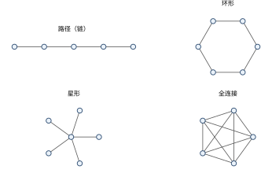
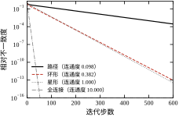
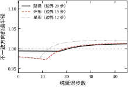
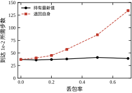
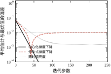
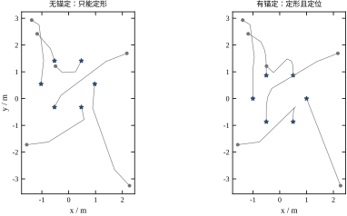

本章讲一件事：当控制器不止一个、而且它们只能和邻居说话时，全局行为由什么决定。 七个问题贯穿全章——拓扑决定了什么、收敛有多快、说晚了会怎样、说丢了会怎样、只定形不定位置行不行、分布式优化差在哪里、什么时候该退回集中式。
前面三十三章的控制器都是“一个”。一个被控对象、一个采样周期、一个决策中心。到了现场，这个假设经常不成立：四台 AGV 要编队搬运、三十台风机要协同限载、上百个逆变器要共同支撑微网电压、十几个传感器要融合成一张地图。这时的问题不再是“怎么算一个控制量”，而是“一群各自只能看到局部的决策者，怎样在不打架的前提下完成一件共同的事”。
三种架构要先分清楚。
集中式：所有测量送到一个中心，中心算出所有执行器的指令再发下去。它的优点是全局信息完备、最优性好解；缺点是通信是星形汇聚、算力随规模平方增长、中心一挂全系统瘫痪。规模一旦过百，集中式首先死在通信和算力上，而不是死在算法上。
分散式：每个智能体只用本地信息，互不通信。它最省通信、最容易认证，但没有协调就没有全局目标：四台 AGV 各自朝目标走，很可能堵在同一个路口。
分布式：每个智能体与邻居交换少量信息，各自算各自的指令。它是前两者的中间态，但不是“折中”，而是在规模上唯一可行的形态：通信是局部的（带宽随规模线性增长）、计算是并行的、单点失效只影响局部。代价是全局最优性不再有保证，只能保证“达成一致”或“收敛到某个可刻画的邻域”。
本章要回答的，就是“这个邻域有多大、收敛有多快、要什么条件”。
任何一套分布式方案落地前，都会被问到三个问题。它们分别对应本章的三组结论。
问题一：谁能和谁说话？ 通信拓扑不是工程细节，它直接决定“信息传遍全网要多久”。数学上这件事由一个数刻画——拉普拉斯矩阵的第二小特征值 \lambda_2，称为代数连通度。\lambda_2=0 意味着图不连通，全网永远达不成一致；\lambda_2 越小，收敛越慢。§34.6 的 E1 给出四个拓扑的实测：同样十个智能体，路径图的 \lambda_2=0.0979，环形 0.3820，星形 1.0000，全连接 10.0000，达到同一精度所需的步数分别是 500、128、130、10。
问题二：要多少轮？ 有了 \lambda_2，收敛速度基本就定了：离散协议的每步收缩因子约为 1-\varepsilon\lambda_2，连续协议是指数 e^{-\lambda_2 t}。于是“达到 10^{-3} 要多少轮”可以闭式算出，不需要仿真。这条公式的价值在于：它把“通信预算”和“控制精度”直接连了起来。
问题三：说晚了、说丢了会怎样？ 通信有延迟、有丢包、有量化。延迟会直接吃掉稳定裕度——闭环稳定的充要条件大致是 \tau\lambda_{\max}<\pi/2，超过就振荡发散；丢包则取决于回退策略：若收到旧值就沿用（零阶保持），一致性能保住、只是变慢；若收不到就把自己当成邻居（退回自身），等效于把权重调小，收敛速度会成倍下降。§34.6 的 E2、E3 把这两件事各量化了一遍。
这三个问题的答案有一个共同来源：拉普拉斯矩阵的谱。这就是为什么本章一半的篇幅在讲图、在讲谱。
把上面三类问题抽象出来，形式是统一的：每个智能体维护一个局部状态 x_i（可能是位置、估计值、决策变量），每一步做两件事——用自己的局部信息修正、用邻居的信息平均。写成连续时间就是
\dot{x}_i=-\sum_{j\in\mathcal{N}_i}a_{ij}\,(x_i-x_j)+u_i^{\text{local}}
第一项是“跟邻居拉平”，第二项是“干自己的活”。分布式控制的各种变体，差别只在第二项：
所以本章的路线是“先研究纯一致性，再把各种任务看成在它上面加一项”。 纯一致性的所有结论（收敛、速率、延迟边界）都能直接搬到后面几种，因为它们共享同一个拉普拉斯算子。
分布式控制与经典控制不是两套东西，接口有三处。
第一，一致性是一个特殊的跟踪问题。 把“邻居的平均”当成参考信号，一致性协议就是一个“参考随时间变化的跟踪器”，它的“误差”是 x_i-\bar x。但它与常规跟踪有一个本质差别：参考信号本身是所有智能体共同产生的，没有人从外面给定。 这带来一个后果——一致性的收敛点由初值和拓扑共同决定（加权平均），而不是由某个外部指令决定。要让全网收敛到指定值，必须额外引入“锚”（§34.3.6）。
第二，拉普拉斯矩阵就是一个特殊的系统矩阵。 \dot{\mathbf{x}}=-L\mathbf{x} 与 \dot{\mathbf{x}}=A\mathbf{x} 没有区别，稳定性判据就是“-L 的特征值实部非正”。第 3 章与第 52 章的结论直接可用。真正新增的只有一件事：L 的结构由拓扑决定，于是“改通信”等价于“改系统矩阵”，这是集中式控制里没有的自由度。
第三，分布式优化的收敛性借用了第 29、30 章的工具。 梯度下降的步长条件、ADMM 的收敛证明、对偶上升，全部原样搬过来，只是每一“步”多了邻居平均这一项，于是步长上界里多出一个 \lambda_2。
分工上要说清：本章只讲“多个体如何协调”，不涉及“个体之间利益冲突”（那是第 35 章的博弈），也不涉及“大规模分布式 MPC 的分解算法细节”（那是第 80 章）。本章给的是骨架，后面两章分别补“冲突”与“规模”。
§34.2 建立图与拉普拉斯矩阵的语言，把“拓扑好不好”变成一个可算的数 \lambda_2；§34.3 从 \dot{\mathbf{x}}=-L\mathbf{x} 出发，依次推出连续与离散一致性、收敛速率的闭式、延迟的稳定边界、丢包下的收敛、编队、分布式梯度下降与 ADMM；§34.4 讲采样周期、同步方式、量化与实现细节；§34.5 讲拓扑选型、时钟同步、容错与适用边界；§34.6 用六组实验把每一条结论变成一个可复现的数；§34.7 收成一页验收清单、一页纸选型与十条错误。
如果只有半小时，读 §34.2.2 的 \lambda_2、§34.3.4 的延迟边界、§34.7.3 的选型表。
一句话核心：分布式控制把“全局最优”换成了“局部规则的一致性”，代价是最优性，收益是可扩展性；而这一切的定量刻画都落在拉普拉斯谱上。
形式化之前，先把一个具体场景摆在桌上，后面每节都回到它。
任务：四台差速 AGV 在 40\ \text{m}\times20\ \text{m} 的车间里搬运料箱，行进中保持边长 1.5\ \text{m} 的菱形队形。要求：队形误差小于 5\ \text{cm}，从任意初始位置 10\ \text{s} 内到位。
通信：Wi-Fi，控制周期 T_s=50\ \text{ms}，实测单跳延迟 8\sim15\ \text{ms}，丢包率 2\%\sim10\%，拓扑为环形（每台只与前后两台通信）。
把这个场景代进本章的公式，几个数立刻能算出来。四节点环的谱是 \lambda_2=2、\lambda_{\max}=4，取 \varepsilon=0.5/\lambda_{\max}=0.125，于是
四个数里三个都通过了，唯一没通过的是“队形误差小于 5 cm”——因为一致性根本不管队形摆在哪。 这正是 §34.3.5 要讲的“锚”：四台车必须各自知道自己在车间里的绝对位置（UWB 或地面二维码），一致性只负责把“相对间距”维持住。
所以这个例子的结论是：在这个规模上，分布式控制的难点不在收敛速度、不在延迟、不在丢包，而在“参考从哪来”。 这也是本章的排序：先把“多快、多稳”算清楚（它们有闭式，容易），再把“对不对”讲明白（它没有闭式，靠结构设计）。
设 n 个智能体，通信关系用一个无向图 \mathcal{G}=(\mathcal{V},\mathcal{E}) 表示：\mathcal{V}=\{1,\dots,n\} 是节点集，\mathcal{E}\subseteq\mathcal{V}\times\mathcal{V} 是边集，(i,j)\in\mathcal{E} 表示 i 与 j 能直接交换信息。三个矩阵依次定义：
邻接矩阵 A=[a_{ij}]，a_{ij}=1 若 (i,j)\in\mathcal{E}，否则 0（无向图对称）。度矩阵 D=\mathrm{diag}(d_1,\dots,d_n)，d_i=\sum_j a_{ij}。拉普拉斯矩阵
L=D-A,\qquad L_{ij}=\begin{cases}d_i, & i=j\\ -a_{ij}, & i\ne j\end{cases} \tag{34-1}
L 有三条一眼可见的性质：行和为 0（L\mathbf{1}=\mathbf{0}）、对称半正定（L=L^{\top}，\mathbf{x}^{\top}L\mathbf{x}=\sum_{(i,j)\in\mathcal{E}}(x_i-x_j)^2\ge0）、二次型就是“边上差值的平方和”。第三条最重要：它说明 L 度量的是“不一致的程度”，而不是“状态的大小”。
图 34-1 给出四种典型拓扑。

它们的谱差别很大，表 34-1 把 n=10 时的 \lambda_2 与 \lambda_{\max} 列在一起。
表 34-1 四种拓扑的谱（n=10，E1 实测）
| 拓扑 | 边数 | \lambda_2 | \lambda_{\max} | 到 10^{-3} 的步数 |
|---|---|---|---|---|
| 路径（链） | 9 | 0.0979 | 3.9021 | 500 |
| 环形 | 10 | 0.3820 | 4.0000 | 128 |
| 星形 | 9 | 1.0000 | 10.0000 | 130 |
| 全连接 | 45 | 10.0000 | 10.0000 | 10 |
看这张表要注意两件事。其一，边数不能说明问题：路径与星形都是 9 条边，\lambda_2 差 10 倍。其二，\lambda_2 与 \lambda_{\max} 要一起看：星形的 \lambda_2 比环形大 2.6 倍，但 \lambda_{\max} 大 2.5 倍，两者相抵，最终步数几乎一样（130 对 128）。这说明“加边”不一定加快收敛——要看加的是哪条边。
L 的特征值记为 0=\lambda_1\le\lambda_2\le\cdots\le\lambda_n=\lambda_{\max}。\lambda_1=0 对应的特征向量是 \mathbf{1}（全 1 向量），因为 L\mathbf{1}=\mathbf{0}。\lambda_2 是否为零，恰好等价于图是否连通。
这条结论值得证一下，因为它解释了后面所有结论的来源。若图不连通，则节点分成 k\ge2 个互不相通的组，把 L 按组重排后是块对角，每块都有一个零特征值，于是 0 的重数是 k，\lambda_2=0。反过来，若 \lambda_2=0，则存在非零向量 \mathbf{v}\perp\mathbf{1} 使 L\mathbf{v}=\mathbf{0}，于是
0=\mathbf{v}^{\top}L\mathbf{v}=\sum_{(i,j)\in\mathcal{E}}(v_i-v_j)^2
每一条边上 v_i=v_j，即 \mathbf{v} 在每个连通分量内是常数；而 \mathbf{v}\perp\mathbf{1} 且 \mathbf{v}\ne\mathbf{0}，说明至少有两个分量取不同的常数值，图不连通。\square
于是 \lambda_2 有两个读法：它是“连通性的程度”，也是“一致性的速率”。 这两个读法是同一件事的两面，因为 L\mathbf{v}=\lambda_2\mathbf{v} 的那个特征向量 \mathbf{v}（Fiedler 向量）正是“最难拉平的那个方向”——它的正负号把图切成两半，\lambda_2 越小，这两半之间的“弹簧”越软。
Fiedler 向量有直接的工程用途：它给出图的最优二分。 把 \mathbf{v} 的正分量归为一组、负分量归为另一组，得到的就是“连通性最弱的那条割”。多机器人分簇、微网分区、传感器分组，都可以先用它做一次划分，再决定在哪条边上加通信。§34.5.1 讲拓扑选型时会回到这一点。
实际通信常常不是“通/不通”，而是有质量差别：光纤、Wi-Fi、声呐链路的带宽与可靠性不同。这时用加权邻接 a_{ij}\ge0，L 的定义不变，只是 d_i=\sum_j a_{ij}。权重的作用与“加边”类似：提高某条边的权重，等价于让这对邻居“拉得更紧”，\lambda_2 随之上升。
有向图要单独说。若 j 能发给 i 但反之不能，A 不对称，L 也不对称，特征值可能是复数。此时“收敛到一致”的条件从“连通”变成“含有一棵有向生成树”（存在一个节点能通过有向路径到达所有其他节点）。注意这个条件比强连通弱：只要有一个“根”，信息就能流遍全网。
平衡图是介于两者之间的一类：每个节点的入度等于出度（\sum_j a_{ij}=\sum_j a_{ji}）。它的好处是 \mathbf{1}^{\top}L=\mathbf{0}，于是平均值在演化中保持不变，一致性收敛到初值的算术平均。非平衡图不保持平均，收敛点是一个加权平均，权重由拓扑决定。这一点在分布式估计里至关重要：想让全网收敛到“无偏的平均”，图必须是平衡的（或采用专门的补偿算法）。
把要研究的问题写成最干净的形式。n 个智能体各有一个标量状态 x_i(t)，协议为
\dot{x}_i(t)=-\sum_{j\in\mathcal{N}_i}a_{ij}\bigl(x_i(t)-x_j(t)\bigr) \tag{34-2}
写成矩阵形式就是本章反复使用的那一条：
\dot{\mathbf{x}}(t)=-L\,\mathbf{x}(t),\qquad \mathbf{x}(0)=\mathbf{x}_0 \tag{34-3}
“一致性”的定义是：存在常数 c，使 \lim_{t\to\infty}x_i(t)=c 对所有 i 成立。 注意它没有指定 c 是多少——这正是 §34.1.4 说的“参考信号由系统自己产生”。若图连通且平衡，可以证明 c=\frac{1}{n}\sum_i x_i(0)；非平衡时 c 是加权平均。
离散版本把导数换成差分：
x_i(k+1)=x_i(k)-\varepsilon\sum_{j\in\mathcal{N}_i}a_{ij}\bigl(x_i(k)-x_j(k)\bigr) \tag{34-4}
即 \mathbf{x}(k+1)=(I-\varepsilon L)\mathbf{x}(k)。矩阵 W=I-\varepsilon L 称为“权重矩阵”，它必须是行随机的（每行和为 1），否则平均值不守恒。这一点在 §34.3.2 讲步长上界时会用到。
三个判据从强到弱，覆盖三种假设。
判据一（连续、固定拓扑）：图连通，则 (34-3) 的所有解收敛到一致，且
\|\mathbf{x}(t)-c\mathbf{1}\|\le e^{-\lambda_2 t}\,\|\mathbf{x}(0)-c\mathbf{1}\| \tag{34-5}
即收敛速率由 \lambda_2 决定，与 \lambda_{\max} 无关。
判据二（离散、固定拓扑）：步长满足 0<\varepsilon<2/\lambda_{\max}，则 (34-4) 收敛，速率约为 1-\varepsilon\lambda_2（当 \varepsilon\lambda_2\ll1 时）。上界 2/\lambda_{\max} 是硬约束：超过它，最高频模态开始振荡；等于 2/\lambda_{\max} 时临界。
判据三（时变拓扑）：若每个时刻的 W(k) 都是行随机的、且存在常数 \eta\in(0,1) 使所有非零权重不小于 \eta，并且图的并集在一段有界时间窗内连通，则乘积 W(k)\cdots W(0) 收敛到秩一矩阵，一致性成立。这是“切换拓扑”能工作的理论依据，也是 §34.3.5 丢包分析的基础。
把 (34-3) 的解写出来就明白了。对 L 做特征分解 L=V\Lambda V^{\top}，\Lambda=\mathrm{diag}(0,\lambda_2,\dots,\lambda_n)，则
\mathbf{x}(t)=e^{-Lt}\mathbf{x}_0=V\,\mathrm{diag}(1,e^{-\lambda_2t},\dots,e^{-\lambda_nt})\,V^{\top}\mathbf{x}_0 \tag{34-6}
第一个分量（对应 \lambda_1=0）不衰减，它就是收敛点；其余分量按各自的特征值指数衰减。慢的那个决定整体速度，所以是 \lambda_2；快的那些决定“暂态的抖动有多大”，所以与 \lambda_{\max} 有关。
离散情形同理，只是 e^{-\lambda t} 换成 (1-\varepsilon\lambda)^{k}。这就是为什么本章的每一个定量结论都可以写成“\lambda_2 与 \lambda_{\max} 的函数”：因为它们本来就是模态分解的两个端点。
由此也能看出一个常被忽略的事实：一致性不是“抹平”，而是“把初始状态投影到 \mathbf{1} 方向上”。 \mathbf{x}_0 中垂直于 \mathbf{1} 的部分被指数衰减掉，平行于 \mathbf{1} 的部分被保留。所以信息没有消失，只是被压缩到了一个维度上。 想让全网记住更多信息（比如既要平均又要保留各自的偏差），就必须显式地引入额外的状态，这是分布式估计与分布式优化的起点（§34.3.7）。
L=D-A 只是最常用的一种。文献里还有两种，三种的 \lambda_2 数值不同，但“\lambda_2=0 等价于不连通”这条结论一致。用错的影响不是定性错误，而是定量差一倍以上。
组合拉普拉斯（本书默认）：L=D-A。它有一个很漂亮的分解。定义关联矩阵 B\in\mathbb{R}^{n\times|\mathcal{E}|}，每列对应一条边 (i,j)，第 i 行取 +1、第 j 行取 -1，则
L=B B^{\top},\qquad \mathbf{x}^{\top}L\mathbf{x}=\|B^{\top}\mathbf{x}\|^{2}=\sum_{(i,j)\in\mathcal{E}}(x_i-x_j)^2
这个分解把“拉普拉斯”和“边”直接连了起来：B^{\top}\mathbf{x} 就是把状态投影到每条边上得到“边上的差”，L 的作用是“先算边差、再汇总回节点”。它的秩是 n-c（c 为连通分量数），这也顺便证明了“零特征值重数等于分量数”。
由 Rayleigh 商，\lambda_2 还可以写成
\lambda_2=\min_{\mathbf{x}\perp\mathbf{1},\ \mathbf{x}\ne\mathbf{0}}\frac{\sum_{(i,j)\in\mathcal{E}}(x_i-x_j)^2}{\sum_i x_i^2}
这是一个“最小割”的连续版本：在所有“总能量为 1、均值为 0”的分布里，找那个“边上差最小”的方向。它小，说明存在一个把图切成两半、而切口很窄的方向——这就是 §34.2.2 里 Fiedler 向量切图的解析来源。
归一化拉普拉斯：L_{\text{sym}}=I-D^{-1/2}AD^{-1/2}，元素为 1（对角）、-1/\sqrt{d_id_j}（有边）、0（无边）。它的特征值落在 [0,2] 内，与度数尺度无关。适合度数差异大的图：微网里有的逆变器接 2 条馈线、有的接 8 条，用组合拉普拉斯时高度数节点会主导平均，用归一化版本则不会。
随机游走拉普拉斯：L_{\text{rw}}=I-D^{-1}A=D^{-1}L。它与 L_{\text{sym}} 相似（L_{\text{rw}}=D^{-1/2}L_{\text{sym}}D^{1/2}），特征值完全相同、特征向量不同。它对应“每个节点按度数加权平均邻居”，是一致性协议在“权重取 1/d_i”时的自然形式。
三者的选择只有一条判据：平均是按“每个节点一票”还是按“每条边一票”。 前者用组合拉普拉斯，后者用随机游走；度数差异大且不希望被高度数节点主导时，用归一化版本并把步长按 \lambda_2(L_{\text{sym}}) 整定。E1 到 E6 全部用组合拉普拉斯，因为四个拓扑里除星形外度数都均匀，换用归一化版本数值差别很小；星形若用归一化版本，\lambda_2 会从 1.0 变到约 0.5，结论的方向不变、数字全变。
\lambda_2 不是随便一个数，它随图的“尺寸”按固定规律衰减。四个典型拓扑的闭式解：
\lambda_2^{\text{路径}}=\frac{\pi^2}{n^2}+O(n^{-3}),\qquad \lambda_2^{\text{环}}=\frac{4\pi^2}{n^2}+O(n^{-4}),\qquad \lambda_2^{\text{二维网格}}\approx\frac{2\pi^2}{n},\qquad \lambda_2^{\text{全连接}}=n
（网格是 \sqrt{n}\times\sqrt{n}，n 为总节点数。）前两式是 1/n^2，第三式是 1/n，第四式是 n。 这个差别不是常数因子，而是量级差别：节点数从 10 涨到 100，路径图的 \lambda_2 掉 100 倍，网格只掉 10 倍，全连接涨 10 倍。
更一般的写法用特征路径长度 \ell（大致等于直径）：\lambda_2\sim\pi^2/\ell^2。代入 §34.3.2 的步数上界，得
N\ \sim\ \frac{\ell^2\ln(1/\xi)}{\pi^2}\cdot\frac{1}{\varepsilon}
“收敛步数正比于直径的平方”——这条标度律解释了本章几乎所有拓扑现象。 信息传遍全网需要 \ell 跳，但要把它“平均开”需要 \ell^2 步，因为一致性是一个扩散过程，而扩散的时间尺度是长度的平方。这与热传导方程的时间尺度完全同源。
用 E1 验证：十节点路径的直径是 9，环的直径是 5，比值 (9/5)^2=3.24；实测步数比 500/128=3.9。差的那部分来自路径图的 \lambda_2 比渐近式略低（n=10 还没到渐近区），但量级完全对上。 全连接到环的比值更极端：直径从 5 降到 1，(5/1)^2=25，实测 128/10=12.8——全连接的 \lambda_2=n 而不是 \pi^2/\ell^2，说明“直径”这个标度只对稀疏图成立。
三个推论：
第一，规模是分布式一致性最贵的成本，而且是平方级的。 节点数翻倍，路径/环的收敛步数涨 4 倍；再加上每步的通信量也翻倍（边数翻倍），总通信量涨 8 倍。 这就是为什么 n 过百必须分簇——不是为了省带宽，而是为了不让直径随规模线性增长。
第二，加长程边是唯一能打破平方律的手段。 小世界网络的核心结论是：随机加少量长程边，直径从 O(n) 降到 O(\log n)，\lambda_2 从 O(1/n^2) 提到 O(1/\log^2 n)。代价是 \lambda_{\max} 也会上升，于是步长上界与延迟裕度同步变差——这就是 §34.5.1 说要“少量”的原因。
第三，树形拓扑的 \lambda_2 由最长的那条路径决定。 微网、给水网络、矿井通信都是树，树的直径可能远大于 \sqrt{n}（一条“长蛇”形的树，直径就是 n）。所以树形拓扑不能按“节点数”估收敛时间，必须按“最长路径”估。 这也是 §34.5.3 说微网的一致性要放到秒级时间尺度的原因。
前面所有结论都挂在 \lambda_2 上，于是工程上第一个问题变成：手上这套系统，\lambda_2 是多少？ 三条路子，成本从低到高。
路子一：数直径，用尺度律粗估。 拿拓扑图数最长路径的跳数 \ell，代 \lambda_2\approx\pi^2/\ell^2。十节点环 \ell=5，得 0.395，真值 0.382，偏 3%；八节点环 \ell=4，得 0.617，真值 0.586，偏 5%。十来个节点的图上这个粗估够用。 但小图不行：§34.1.6 的四节点环 \ell=2，得 2.47，真值只有 2.00，偏 23%——渐近式在 n=4 上还没进场，这印证了 §34.2.8 那句“n=10 还没到渐近区”。 所以路子一只适合做“量级判断”，且节点数最好大于十。它的价值在于不需要任何计算：现场工程师看一眼布线图就能判断“这个拓扑大概多快”，而 §34.5.1 的加边决策也正是拿这个数在比。
路子二：跑一次一致性，拟合斜率。 给定步长 \varepsilon，不一致度按 (1-\varepsilon\lambda_2)^k 衰减，取对数后是一条直线，斜率 s=\ln(1-\varepsilon\lambda_2)，于是
\lambda_2=\frac{1-e^{s}}{\varepsilon}
这正是 E1 在做的事：环形 \varepsilon=0.125、拟合速率 0.9518，反推 \lambda_2=0.386，与特征分解的 0.382 差 1%。代价是要跑几百步，好处是它测的是“真实通信条件下的有效 \lambda_2”——包含了丢包、量化、调度抖动带来的全部退化。§34.6.7 说“换参数哪些数会变”，其中 \lambda_2 名义值不变、有效值会变，差别就靠这条路子量出来。
路子三：在线监测。 生产系统不能停机做实验，只能从运行数据里读。做法是每隔一段时间统计一次全网的不一致度 \|\mathbf{x}-\bar x\mathbf{1}\|，看它的包络是否按预期衰减。难点在于每个节点只有局部信息，算不出全局的均值。 这里有一个漂亮的解法：最大值一致与最小值一致可以在“直径步”内精确收敛（见 §34.3.11），于是每个节点都能在有限步内拿到全局的 \max_i x_i 与 \min_i x_i，用极差 \max-\min 代替范数做包络判据。极差不是范数，但它和范数同阶，做“是否在按预期衰减”的判断足够了。
三条路子的分工可以一句话说清：设计阶段用路子一，调试阶段用路子二，运维阶段用路子三。 三者都要注意同一件事：步数与 \lambda_2 成反比，所以 \lambda_2 估偏 20%，收敛时间就估偏 25%。 别指望用粗估去卡秒级的时序指标——那是路子二的活。
本节把 §34.2 立下的三条判据逐条推到底，并给出每一条的定量形式。推导只用一个工具：把状态分解成“均值方向”和“不一致方向”，后者永远落在 \mathbf{1} 的正交补里，而 L 在这个子空间上是正定的，最小特征值就是 \lambda_2。
记均值 \bar x(t)=\frac{1}{n}\sum_i x_i(t)，偏差 \boldsymbol{\delta}(t)=\mathbf{x}(t)-\bar x(t)\mathbf{1}。因为 L\mathbf{1}=\mathbf{0}，有 \dot{\bar x}=0（平衡图），于是 \dot{\boldsymbol{\delta}}=-L\boldsymbol{\delta}，偏差自己满足一个自治方程。
取李雅普诺夫函数
V(\boldsymbol{\delta})=\tfrac12\|\boldsymbol{\delta}\|^2=\tfrac12\sum_{i=1}^{n}\bigl(x_i-\bar x\bigr)^2 \tag{34-7}
它对时间的导数，代入 \dot{\boldsymbol{\delta}}=-L\boldsymbol{\delta} 并利用 L 对称：
\dot V=\boldsymbol{\delta}^{\top}\dot{\boldsymbol{\delta}}=-\boldsymbol{\delta}^{\top}L\boldsymbol{\delta}\le-\lambda_2\|\boldsymbol{\delta}\|^2=-2\lambda_2 V \tag{34-8}
第一个不等号用了两件事：\boldsymbol{\delta}\perp\mathbf{1}（所以 \boldsymbol{\delta} 落在 L 的非零特征子空间里），以及 L 在该子空间上最小特征值为 \lambda_2。解这个微分不等式得
\|\mathbf{x}(t)-\bar x\mathbf{1}\|\le e^{-\lambda_2 t}\,\|\mathbf{x}(0)-\bar x\mathbf{1}\| \tag{34-9}
这就是 §34.2 的判据一，证明只用了三行。值得记住的是这个证明的结构：它没有做任何特征分解，只用“L 在 \mathbf{1} 的正交补上半正定、下界为 \lambda_2”这一条。 后面时变拓扑、有向图、量化一致性的证明都是这个结构的变体，区别只在于“\delta 的正交补”要换成别的子空间。
还有一层要说明：V 也可以写成 \frac12\mathbf{x}^{\top}L\mathbf{x}=\frac12\sum_{(i,j)\in\mathcal{E}}(x_i-x_j)^2，两者只差一个常数（因为 \frac12\boldsymbol{\delta}^{\top}L\boldsymbol{\delta}=\frac12\mathbf{x}^{\top}L\mathbf{x}）。前一种写法量的是“离均值多远”，后一种写法量的是“边上差多少”，数值相同、解释不同：前者适合做收敛性证明，后者适合做工程诊断——它直接告诉你“哪条边上的差最大”，那就是该加带宽或加边的地方。
式 (34-9) 是最坏情况界，只有当初始偏差恰好对准 Fiedler 向量时取等号。E1 里路径图的理论速率 0.9875 与拟合速率 0.9866 的差就是这么来的：随机初值在各个模态上都有分量，前若干步由较快的模态主导，实测的暂态比最坏界略快。
离散协议 \mathbf{x}(k+1)=W\mathbf{x}(k)，W=I-\varepsilon L。W 与 L 有同一组特征向量，特征值为 1-\varepsilon\lambda_i。一致性的充要条件是所有 i\ge2 的特征值落在单位圆内：
|1-\varepsilon\lambda_i|<1,\quad i=2,\dots,n\ \Longleftrightarrow\ 0<\varepsilon<\frac{2}{\lambda_{\max}} \tag{34-10}
左端给出 \varepsilon>0，右端由 i=n（\lambda_{\max} 最大）给出 \varepsilon<2/\lambda_{\max}——上界只由最大特征值决定，与拓扑的“好坏”无关；而收敛快慢只由最小非零特征值决定。 这是一对必须分开看的东西：\lambda_{\max} 管“会不会振出去”，\lambda_2 管“多久能拉平”。
收敛因子（每步误差的压缩倍数）是
\rho(\varepsilon)=\max\bigl(|1-\varepsilon\lambda_2|,\ |1-\varepsilon\lambda_{\max}|\bigr) \tag{34-11}
\varepsilon 很小时两个绝对值都接近 1，收敛慢；\varepsilon 接近 2/\lambda_{\max} 时第二个绝对值接近 1，也会慢（高频模态开始一步正一步负地打摆）。中间有一个最优值，令两个绝对值相等：
\varepsilon^{*}=\frac{2}{\lambda_2+\lambda_{\max}},\qquad \rho^{*}=\frac{\lambda_{\max}-\lambda_2}{\lambda_{\max}+\lambda_2} \tag{34-12}
这条公式的工程含义很直接：收敛速度由谱的“相对宽度”决定，而不是由谱的绝对值决定。 谱越集中（\lambda_{\max}/\lambda_2 接近 1），一致性越快；谱越分散，越难兼顾——这正是“全连接图一步到位（\rho^*=0）而路径图慢得出奇”的原因。
达到精度 \xi 所需步数由 \rho^{N}\le\xi 给出：
N\ \ge\ \frac{\ln(1/\xi)}{\ln(1/\rho)} \tag{34-13}
用 E1 的口径（\varepsilon=0.5/\lambda_{\max}，\xi=10^{-3}）核对一遍：路径 \rho=0.9875，式 (34-13) 给 549 步，实测 500 步；环形 \rho=0.9523 给 141 步，实测 128 步；星形 \rho=0.9500 给 135 步，实测 130 步；全连接 \rho=0.5000 给 10.0 步，实测 10 步。四组全部偏高、偏差在 10% 以内，这正是“上界”该有的样子。
顺便算一下最优步长能省多少：路径图按式 (34-12) 有 \rho^*=(3.9021-0.0979)/(3.9021+0.0979)=0.9511，式 (34-13) 估算约 138 步，比实测的 500 步快 3.6 倍。差距全部来自步长选择，不是拓扑。“路径图慢”这句话要加一个前提：在统一取 0.5/\lambda_{\max} 的前提下慢。 工程上如果拓扑固定、规模固定，应当按式 (34-12) 单独整定步长；只有在“多个拓扑横向对比”时才用统一口径，否则比出来的不是拓扑差异，而是整定差异。
把通信延迟写进协议。设每条消息延迟 \tau 步（为简单起见取同构延迟），协议变成
\mathbf{x}(k+1)=\mathbf{x}(k)-\varepsilon L\,\mathbf{x}(k-\tau) \tag{34-14}
对每一个模态 i 独立分析：设 x_i 方向的分量为 z_i，则 z_i(k+1)=z_i(k)-\varepsilon\lambda_i z_i(k-\tau)。试指数解 z_i(k)=s^{k}，得特征方程
s^{\tau+1}=s^{\tau}-\varepsilon\lambda_i \tag{34-15}
临界稳定对应 s=e^{j\omega} 落在单位圆上。代入并分离模与相角：模给出 \omega=\varepsilon\lambda_i（当 \omega 很小时近似），相角给出
\omega\tau=\frac{\pi}{2}\ \Longrightarrow\ \varepsilon\lambda_i\tau=\frac{\pi}{2} \tag{34-16}
所以延迟的稳定边界是：
\tau<\frac{\pi}{2\varepsilon\lambda_{\max}} \tag{34-17}
这里的 \varepsilon 是每步的增益（无量纲）。若把协议写成物理形式 \dot{\mathbf{x}}(t)=-L\mathbf{x}(t-\tau_{\text{s}})，\varepsilon=1，条件退化成 §34.1.2 写在导读里的 \tau_{\text{s}}\lambda_{\max}<\pi/2，\tau_{\text{s}} 的单位是秒。两种写法是同一件事：延迟吃掉的裕度与“最大特征值 × 增益 × 延迟”这个乘积成正比，三者中任何一个变大，裕度都同比缩小。
用 E2 核对（n=6，\varepsilon=0.02）：路径 \lambda_{\max}=3.7321，式 (34-17) 给 21.04 步，实测最大稳定延迟 20 步；环形 \lambda_{\max}=4.0000 给 19.63 步，实测 19 步；星形 \lambda_{\max}=6.0000 给 13.09 步，实测 12 步。三组都系统性地少 1 步左右，这不是误差，而是离散化的代价：式 (34-15) 里 s^{\tau+1} 的那一个额外幂次，等效于把延迟又加了半步到一步。 工程估算时按 \lfloor\pi/(2\varepsilon\lambda_{\max})\rfloor-1 取更稳妥。
延迟边界的三个推论值得单独说。
第一，谱半径在边界内并不单调。 环形图的谱半径从 d=0 的 0.9800 一路降到 d=11 的 0.9730（延迟反而“帮了忙”，因为它把高频模态的相位推到了更有利的位置），到 d=12 又回到 0.9749；星形图则在 d=9 之后明显回升（0.9756\to0.9765\to0.9853\to0.9921\to0.9974），一路逼近 1。这解释了现场一个常见现象：延迟从 5 ms 加到 15 ms 时性能几乎不变，再加 5 ms 就突然振起来——边界附近的谱半径对延迟极其敏感，而边界以内几乎不敏感。
第二，\lambda_{\max} 大的拓扑延迟裕度小，但它的 \lambda_2 也可能大。 星形图就是典型：\lambda_2=1.0（一致得快），\lambda_{\max}=6.0（延迟裕度只有 12 步）。“快”和“稳”在延迟面前是对立的：想让误差衰减快，就得用大步长或强耦合，而这恰好把 \lambda_{\max} 也顶上去。 这是分布式系统里最实在的一对矛盾。
第三，减小步长能换延迟裕度，但换不来真实的秒数。 由式 (34-17)，\varepsilon 减半，\tau 的步数上限翻倍；但若采样周期不变，物理延迟的秒数上限也随之翻倍——这是真的收益。若采样周期同比缩短，则步数上限翻倍而秒数上限不变，只是把同一个裕度换了一种计量单位。现场调参时这两件事必须分清：改的是“每步增益”还是“采样周期”，效果完全不同。
丢包的建模取决于“收不到时用什么顶替”。两种最常用的回退策略，行为差别很大。
策略一，零阶保持（hold）： 缓存每个邻居最后一次成功收到的值，丢包时用缓存值。此时第 k 步实际用的是 \mathbf{x}(k-d_{ij}(k))，d_{ij} 是该边当前的“消息年龄”。丢包等价于延迟，而不是等价于增益损失。
策略二，退回自身（self）： 丢包时把邻居的值当成自己的值，即 x_j\to x_i，该项在更新式里自动抵消。此时那条边在这一步“断开”，等价于把耦合增益乘上 (1-p)：
\mathbb{E}\bigl[W\bigr]=I-\varepsilon(1-p)L\ \Longrightarrow\ \lambda_2^{\text{eff}}=(1-p)\lambda_2 \tag{34-18}
两种策略都把行和保持为 1，所以平均值在期望意义下守恒，稳态仍然是一致，末值仍在 10^{-17} 量级（E3 实测）。丢包不改变“能不能一致”，只改变“多快一致”——这一点与集中式系统里“丢一个包就丢一个控制周期”的直觉完全不同，原因是一致性协议本身是耗散的，它没有需要维持的积分环节。
由式 (34-18)，采用退回自身时收敛因子变成 \rho\approx1-(1-p)\varepsilon\lambda_2，代入式 (34-13) 得
N(p)\ \approx\ \frac{N(0)}{1-p} \tag{34-19}
E3（n=8 环形，\varepsilon=0.15，p 从 0 扫到 0.7）：退回自身时实测 37、40、45、57、86、134 步；式 (34-19) 预测 37、41、46、53、74、123 步。p\le0.3 时几乎完全吻合，p=0.5 与 0.7 时实测比预测更慢，因为此时“随机断开”本身引入了额外的方差，而式 (34-19) 只算了均值效应。
零阶保持的行为完全不同：实测 37、36、37、38、41、39 步。p 从 0 涨到 0.7，步数只涨了 5%。 原因是丢包只让消息“变旧”，而没有削弱耦合强度；而旧消息在一致性协议里仍然是有用的信息——只要它还带着“邻居曾经是多少”，就仍然能把两者往一起拉。
这张对比给出本章最实用的一条结论：
丢包时该缓存最新值，不该退回自身。 前者的性能对丢包率几乎免疫（p=0.7 时只慢 5%），后者按 1/(1-p) 退化（p=0.7 时慢 3.6 倍）。代价是内存与“陈旧度”判断：需要为每条入边存一个值和它的时间戳，并在陈旧度超过阈值时把它标为无效——否则网络长时间断开后，全网会拿着一堆过期值“装作一致”。
还有两种情形会让“丢包只变慢”这条结论失效，必须单独检查。其一，丢包把图切成了两个长期不连通的部分（判据三里“并集在一段有界时间窗内连通”不成立），此时两部分各自收敛到各自的平均值，全网不再一致。其二，丢包发生在自己的状态回读上，这会让“自己的值”也变成随机的，平均值的守恒性被破坏，收敛点出现偏差。前者靠拓扑冗余解决，后者靠本地状态缓存解决，都不属于一致性协议本身能处理的范围。
编队看起来只是“给一致性加一个偏移量”：把状态从 x_i 换成 z_i=x_i-p_i，p_i 是第 i 个智能体的期望队形偏移，协议写成
\dot z_i=-\sum_{j\in\mathcal{N}_i}a_{ij}\bigl(z_i-z_j\bigr),\qquad z_i=x_i-p_i \tag{34-20}
代进去展开就明白它在做什么：\dot x_i=-\sum_j a_{ij}\bigl[(x_i-p_i)-(x_j-p_j)\bigr]，即每个智能体不再追求“和邻居位置相同”，而是追求“和邻居保持 p_i-p_j 的相对位移”。
这个改写带来一个必须正视的性质。式 (34-20) 的收敛点是 z_i\equiv c（所有 z_i 相同），即 x_i=p_i+c——c 是任意的。因为 L\mathbf{1}=\mathbf{0}，给所有 z_i 加同一个常数不改变动力学。所以纯编队协议只能定“形”，不能定“位”：队形会正确地摆出来，但摆在哪里由初值决定。
E5 把这件事实测了一遍（n=6 六边形，\varepsilon=0.1，400 步）：
无锚定那一行的两个数值得并排看：形状误差掉到 10^{-16}，绝对误差卡在 0.546。 这不是数值问题，而是 §34.2.6 那条“信息被压成一维”的直接后果——被保留下来的那一维，就是“整体平移到哪里”，它的值等于初始偏差在 \mathbf{1} 方向上的投影。换句话说：无锚定编队把“位置”这个自由度完整地保留在初值里，一点也没丢，但也一点也没管。
锚定的代价是慢。形状误差从 50 步拖到 153 步，根因只有一条：锚节点不再参与平均，相当于把拉普拉斯矩阵挖掉一行一列，得到“接地拉普拉斯”；它的最小特征值远小于 \lambda_2，而形状误差的衰减速率由它决定。 由 153 步反推，每步收缩约 0.970，对应接地拉普拉斯最小特征值约 0.30，而同一个环的 \lambda_2=1.00——锚把“整体平移”这一维从“完全不受约束”变成“受约束”，代价是这一维成了最慢的模态。
还有两个数：绝对误差 181 步比形状误差 153 步更晚达标。这说明锚定的过程是“先定形、后定位”：队形先在各智能体之间对齐，整体再慢慢挪到锚指定的位置。 工程上如果对“到位时间”有要求，不能只看形状误差的收敛曲线。
三个落地结论：
第一，编队必须有显式的位置基准。 虚拟领导（一个只发参考、不被别人拉的节点）、一个真实锚点、或者一次全局坐标广播，三者任选其一；只靠相对位移的协议一定漂，而且漂的量等于初值偏差，不会自己消失。
第二，一个锚就够，但锚的位置决定全网位置。 只要图连通，单个锚的信息能传遍全网；多个锚时若它们给出的绝对位置互相矛盾，协议没有精确解，只能收敛到最小二乘意义下的折中——现场表现为“队形略有变形，谁也不到位”。
第三，锚的增益要与一致性增益匹配。 增益过大（本节仿真里试过 2.0）会与邻居项打架，反而发散；过小则定位极慢。经验值是让锚的增益与“节点度数 × 一致性增益”同量级，本节 0.8 对 2\times0.1 就是这个比例。
把 §34.1.3 的第二项具体化。设全局目标是各局部代价之和
\min_{x}\ \sum_{i=1}^{n}f_i(x) \tag{34-21}
每个智能体只知道自己的 f_i。最直接的分布式算法是“一致性一步 + 梯度一步”：
x_i(k+1)=\sum_{j\in\mathcal{N}_i\cup\{i\}}w_{ij}\,x_j(k)-\alpha\,\nabla f_i\bigl(x_i(k)\bigr) \tag{34-22}
其中 W=[w_{ij}] 是行随机的权重矩阵（W=I-\varepsilon L 或 Metropolis 权重）。这个算法的想法很自然：一致性负责“大家别散开”，梯度负责“往低处走”。问题是这两股力永远在打架。
打架的结果是一个非零的稳态偏差。直观地看：一致性把各 x_i 拉平，梯度项按各自的 \nabla f_i 把它们推开；平衡时不是“平均梯度为零”（那才是最优），而是“一致性拉力 = 梯度推力”，即偏差与 \alpha/\lambda_2 同阶。每一轮一致性只能把差异压掉 1-\varepsilon\lambda_2，而梯度每轮新注入 \alpha 量级的差异，稳态偏差就是这两个数之比。
E4 把这件事实测了一遍（n=8 环形，\lambda_2=0.5858，局部二次代价，最优解 x^*=0.070312）：
三行的读法要分开：DGD 的“28 步”和中心化的“19 步”不能直接比，因为 DGD 只走到 10^{-2} 就被偏差地板挡住了，而中心化一路走到 10^{-3}。真正的对比是“地板高度”：9.893\times10^{-3} 对 1.516\times10^{-3}，差 6.5 倍。
6.5 倍这个数可以用 §34.3.2 的公式解释。每轮做 m 次一致性，等效的每轮收缩因子是 (1-\varepsilon\lambda_2)^{m}，于是每轮的等效速率是
\lambda_2^{\text{eff}}\ \approx\ 1-(1-\varepsilon\lambda_2)^{m} \tag{34-23}
代入 \varepsilon=0.0625、\lambda_2=0.5858、m=10：(1-0.0366)^{10}=0.689，即每轮压掉 31%，比单步的 3.7% 快 8.5 倍。实测偏差改善 6.5 倍，与 8.5 倍的谱加速同量级——偏差大致按 1/\lambda_2^{\text{eff}} 缩放，这条标度律是可靠的，具体系数取决于梯度不一致的程度。
但加速一致性不是免费的。42 步 × 10 次通信 = 420 次交换，而 DGD 是 28 步 × 1 次 = 28 次。按通信总量算，两时间尺度贵了 15 倍，换来的只是偏差降低 6.5 倍。 这就是分布式优化里最典型的账：精度是拿通信买的，而且越往后越贵。
DGD 的地板来自“没有记忆”——它只看当前这一步的梯度，无法把历史上累积的偏差消掉。解决办法与第 5 章 PID 里加积分项完全一样：引入一个累积量。 这就是 ADMM。
把 (34-21) 改写成带一致性约束的形式：给每个智能体一个本地副本 x_i，要求所有副本相等：
\min\ \sum_{i=1}^{n}f_i(x_i)\quad\text{s.t.}\quad x_i=z,\ \ i=1,\dots,n \tag{34-24}
增广拉格朗日乘子法给出三步迭代（对 f_i=\frac12(x-c_i)^2 可写成闭式）：
x_i=\frac{c_i+\rho\,(z-u_i)}{1+\rho},\qquad z=\frac{1}{n}\sum_{i=1}^{n}(x_i+u_i),\qquad u_i\leftarrow u_i+x_i-z \tag{34-25}
三个式子的分工很清楚：x 步是“本地最优 + 向 z 靠拢”，z 步是一次全局平均（这一步需要全网聚合），u 步是累积不一致量。 u 就是积分器：只要 x_i\ne z 持续存在，u_i 就一直涨，直到把偏差顶回零。所以 ADMM 没有稳态偏差，这与 DGD 有本质区别。
代价有两处。第一，z 步需要全局平均——严格来说这不是“邻居交换”能做到的，要么有一个聚合节点，要么用一致性协议迭代近似（那就又回到收敛速度问题）。第二，\rho 要整定，而且没有普适公式。
E6 把 \rho 的影响量了一遍（n=8，目标 x^*=-0.080795，判据是 \max_i|x_i-z|\le10^{-6}），结果见表 34-2。
表 34-2 ADMM 的罚参数与迭代次数（n=8，E6 实测）
| \rho | 迭代次数 | 交换标量数 |
|---|---|---|
| 0.1 | 144 | 2304 |
| 1.0 | 20 | 320 |
| 10.0 | 6 | 96 |
\rho 增大 100 倍，迭代次数减少 24 倍。方向与直觉相反：通常说“\rho 太大收敛慢”，但在这个问题上 \rho 大反而快。 原因是这里的原始残差 \max|x_i-z| 主要由“各 x_i 离 z 多远”决定，\rho 大等价于对违反约束的惩罚重，原始残差一步就被压下去；\rho 小时惩罚轻，要靠对偶变量慢慢积累才推得动。“\rho 大收敛慢”说的是对偶残差，两个残差的走向相反，这是 ADMM 调参的全部难点。
工程上的做法是自适应：每若干轮比较原始残差与对偶残差，前者大于后者 10 倍就把 \rho 加倍，反之减半。 这条规则在本例里能在十几轮内把 \rho 从 1 推到 10 附近，效果与直接取 10 相当。
前面几小节是骨架，实际系统里最常见的三种变体都只是在骨架上加一项。
分布式 MPC。 每个智能体求解自己的有限时域优化，把邻居的预测轨迹当作耦合约束的已知量（“假设邻居按它上次公布的计划走”），解完后公布自己的轨迹，下一轮再用邻居的新轨迹。这本质上是把一致性迭代搬到了“轨迹空间”：收敛的不是状态，而是各家的计划。 它有一个区别于一致性的性质——迭代若干轮后停下，得到的解一般不是集中式最优解，除非迭代到不动点。 所以分布式 MPC 的“可行性”要靠终端约束与鲁棒裕度保证，而不是靠“多迭代几轮”。
分布式估计。 每个传感器有局部观测，想把全局状态估出来。做法是“本地卡尔曼更新 + 一致性平均”：先各自做一次观测更新，再对信息矩阵与信息向量做一致性。这里有一个容易踩的坑：协方差不能直接平均，必须平均“信息形式”（P^{-1} 与 P^{-1}\hat x），否则会低估不确定性。 原因与 §34.3.1 的证明同源——一致性保的是线性平均，而协方差的合成是非线性的。
分布式事件触发。 邻居值没变就不发，只在“变化超过阈值”时通信。它能把通信量降一到两个数量级，代价是收敛速率不再由 \lambda_2 单独决定，还要乘一个与阈值相关的系数；阈值设得过大时，系统会收敛到一个邻域而不是一点，“一致”变成“近似一致”。
最后回答导读里留下的第七个问题：什么时候该退回集中式。 四条判据，任一成立就不该用分布式：
反过来说，只要规模上去了（n 过百）、或者通信拓扑本身就是物理约束（无线、水声、地理分散），分布式就不是选择而是唯一可行解。 这时前面那些“邻域”“变慢”“偏差地板”就不再是缺陷，而是必须被量化并接受的运行成本。
前面所有推导都假设图无向、L 对称。现场三条假设都可能不成立：链路单向、拓扑时变、需要外部给定参考。这一小节把三种情况补齐，结论的形式不变，变的只是“用哪个矩阵的哪个特征值”。
有向图：收敛点变成加权平均。 若 W 只是行随机（不对称），它的特征值 1 对应的左特征向量 \boldsymbol{\pi}（满足 \boldsymbol{\pi}^{\top}W=\boldsymbol{\pi}^{\top}）就是平稳分布，于是
\mathbf{x}(k)\ \longrightarrow\ \bigl(\boldsymbol{\pi}^{\top}\mathbf{x}_0\bigr)\mathbf{1}
这就是“非平衡图不保平均”的解析表述：收敛点不是算术平均，而是按 \boldsymbol{\pi} 加权的平均，而 \boldsymbol{\pi} 由拓扑决定、现场看不见。所以在有向链路上做分布式估计，必须要么保证平衡（入度等于出度），要么显式补偿 \boldsymbol{\pi}，否则估计值会有一个系统性偏差，而且这个偏差随拓扑变化而变。
有向图收敛的充要条件比无向弱：存在一棵有向生成树，即至少有一个节点能通过有向路径到达所有其他节点。这个节点通常就是“领导”。
领导-跟随：把参考锁在一个节点上。 若 0 号节点被外部固定为 x_0\equiv r（不参与平均），其余节点按一致性更新，则全网收敛到 r。写成矩阵形式，把 0 号节点挖掉后得到“接地拉普拉斯” L_g，其余节点的误差满足 \dot{\mathbf{z}}=-L_g\mathbf{z}，收敛速率由 L_g 的最小特征值决定。
这正是 E5 有锚定那一行的机制：L_g 的最小特征值约 0.30，比 \lambda_2=1.00 小，所以形状误差从 50 步拖到 153 步。“加一个领导”不是加一条信息，而是换了一个矩阵——这是它为什么会让速度变慢 3 倍的准确解释，而不是“多了一跳通信”这么模糊的说法。
切换拓扑：判据三到底要求什么。 时变图下，系统是乘积 \mathbf{x}(k)=W(k-1)\cdots W(0)\mathbf{x}_0。收敛的充分条件是三条同时成立：
第三条是工程上唯一需要设计的一条。 它允许链路频繁断开，只要求“每 T 步内全网整体通过一次”。T 的量级应当是单跳传播时间 1/\lambda_{\max} 的若干倍——T 太大，等于图一直不连通；T 太小，等于要求链路几乎不断。
切换还有一个反直觉的陷阱：每个子系统都收敛，不等于切换系统收敛。 对一般线性系统，“两个稳定矩阵快速交替乘积不稳定”是经典反例；对行随机矩阵，乘积始终有界（每行和恒为 1，不会发散），但可能不再收敛到一致——两个互补的置换矩阵交替，状态就在两组值之间永久振荡，永远不平均。一致性协议里这个陷阱的具体形态是“切换速度超过信息传播速度”：某条边的信息还没传出去，拓扑就变了，等效于每次都在用不一致的初值重启。 工程对策是给切换加驻留时间（dwell time）：每次拓扑变化后至少保持 1/\lambda_{\max} 量级的时间不切换。这正好对应“控制周期不能短于通信建立时间”这条常识——但它的理论依据在这里，而不在“怕丢包”里。
最后一点关于异步的补充。 异步更新可以看成“每步只有一个 W(k) 是非平凡的、其余都是单位阵”，它满足条件一与条件二，只要图本身连通就满足条件三。所以异步不破坏收敛性，破坏的是“步数”与“时间”的对应关系——每步只有一对节点在通信，走完一轮“全网都更新过一次”平均需要 n/2 步。报告异步算法的收敛时间，必须报“墙钟时间”或“通信次数”，报“迭代步数”会系统性高估速度。
前面都在时域看“多少步收敛”。换成频域看，会得到一个更有用的图像：一致性协议是一台作用在“空间频率”上的低通滤波器，而 \lambda_2 就是它的截止频率。
把状态按 L 的特征向量展开：\mathbf{x}(t)=\sum_i c_i(t)\mathbf{v}_i，代入 \dot{\mathbf{x}}=-L\mathbf{x} 得 \dot c_i=-\lambda_i c_i，于是
c_i(t)=c_i(0)\,e^{-\lambda_i t}
每个模态都是一个独立的一阶低通，时间常数 1/\lambda_i。 \lambda_1=0 那一路的增益恒为 1（直流分量原样通过），\lambda_i 越大衰减越快。所以一致性对“空间上缓慢变化”的分量几乎不衰减，对“空间上快速变化”的分量衰减得很厉害——这正是低通的定义。 \lambda_2 小，意味着截止频率低，连“缓变”的分量都过不去（收敛慢）；\lambda_2 大，通带宽，收敛快。
这个读法能解释三件事。
第一，为什么一致性对传感器噪声的抑制与“噪声相关性”有关。 若 n 个节点的测量噪声互相独立、方差都是 \sigma^2，平均之后方差降到 \sigma^2/n——十节点就是 10 dB 的改善，这是分布式平均最实在的收益。 但如果噪声是共模的（同一片区域的风、同一个负载的波动、同一个温度漂移），它落在“空间缓变”的那一档，恰好是低通的原样通过区，平均一点都降不了。 工程判断：先问噪声是独立还是共模，再决定要不要靠一致性去降噪。 这条与第 25 章讲卡尔曼滤波时“过程噪声与量测噪声要分开”是同一个道理。
第二，为什么阶跃式的参考输入会引起很长的暂态。 若把某个节点的值突然拉高（相当于在空间上加一个“阶跃”），它在特征基上的展开会激起所有模态，其中 \lambda_2 那一路衰减最慢，时间常数 1/\lambda_2。十节点路径图的 1/\lambda_2=10.2 步，环是 2.6 步，全连接是 0.1 步——这就是“参考一变，全网要多久才跟上”的直接答案。
第三，为什么“加边”对高频噪声反而更敏感。 加边提高 \lambda_{\max}，通带变宽，空间高频分量的衰减变慢（相对而言），于是量化噪声、单点野值传播得更快。 这与“加边收敛更快”是同一件事的两面：通带越宽，好东西（信息）与坏东西（噪声）传得都快。 这也解释了 §34.3.4 里“持值策略对丢包几乎免疫”——它不改变通带，只是把输入延迟了一点。
把三条合成一句工程判据：要降独立噪声，靠一致性平均（收益 \sqrt{n}）；要压共模噪声，必须靠差分测量或额外的观测手段，一致性帮不上忙。 这个区分在传感器融合里极为关键，也是很多“融合之后反而不准”的根因。
前面十小节都在讲同一件事：\dot{\mathbf{x}}=-L\mathbf{x} 及其离散版本。工程上真正用到的往往不是这个最朴素的形式，而是它的三个变体。每一个变体换掉的东西不同，代价也不同。
变体一：最大一致与最小一致。 把“加权平均”换成“取邻居最大值”：
x_i(k+1)=\max_{j\in\mathcal{N}_i\cup\{i\}}x_j(k)
它有一个平均一致绝对没有的性质：有限时间精确收敛，而且是“直径步”收敛——每过一步，当前的最大值至少往外传一跳，\ell 步之后全网都等于同一个值。不需要选步长，不需要算 \lambda_2，也不受丢包以外的因素影响。 代价有三条：只对单调量成立（求最大、最小、或“最坏情况”才行，求平均不行）；对野值毫无免疫力——一个传感器的错值一旦成为最大，它会被忠实地传到每个节点，并且再也删不掉；收敛后信息不可逆，想把最大值换下来必须重新注入。工程用法很明确：故障检测里判“有没有节点超限”、事件触发里判“全网是否需要动作”、时钟同步里估“最快的那台钟”——这三件事都只要极值，不要平均。
变体二：带参考的一致（比例一致）。 在 §34.3.1 的一致性方程右边加一项拉向自身参考的项：
\dot x_i=-\sum_{j\in\mathcal{N}_i}a_{ij}(x_i-x_j)-k_i(x_i-r_i)
这就是 §34.3.5 的锚定，写成一般形式后 k_i 是“这个节点多相信自己的参考”。它同时干两件事：一致性维持相对关系，k_i 把绝对位置钉住。 平衡点是 (L+K)^{-1}Kr，K=\mathrm{diag}(k_i)——只要有一个 k_i>0 且图连通，L+K 就正定，平衡点唯一。§34.3.5 里四台车的 k_1=0.8、\lambda_{\min}(L_g)\approx0.30 就是这条式子的一个实例。代价是收敛速度由 \lambda_{\min}(L+K) 决定，而不是 \lambda_2：锚定越硬（k_i 越大）收敛越快，但参考的噪声也被放大得越多，这是“跟得紧”与“抗噪”之间的老交换，和 §34.3.1 的比例控制没有区别。
变体三：有限时间一致。 把线性耦合换成带分数幂的饱和耦合：
\dot x_i=-\sum_{j\in\mathcal{N}_i}a_{ij}\,\mathrm{sgn}(x_j-x_i)\,|x_j-x_i|^{\alpha},\qquad 0<\alpha<1
|x_j-x_i|^{\alpha} 在偏差小时大于偏差本身（因为 \alpha<1 时 s^{\alpha}>s，s\in(0,1)），于是靠近平衡点时“推力反而变大”，状态在有限时间内精确到达一致，而不是渐近逼近。它没有“每步乘一个固定因子”的指数尾巴，收敛时间是有限值，且随初始不一致度按幂律缩短——大图上它比线性一致快得多。 代价是 \mathrm{sgn} 在零点附近的抖振：实际系统里量化、噪声、采样都会让它变成“在平衡点附近来回跳”，所以有限时间一致几乎总要配一个边界层，一旦进入边界层就退回线性耦合——这又回到渐近收敛了。换句话说，有限时间一致买的是“大偏差时快”，付出的代价是“小偏差时必须让路”。
三个变体可以这样记：要极值用最大一致（有限步、怕野值）；要绝对参考用带参考一致（平衡点唯一、锚越硬越吵）；要快用有限时间一致（超线性、怕抖振）。 三者都不改变本节的核心结论——收敛快慢仍然由谱决定，只是决定它的是不同的矩阵：最大一致看直径，带参考一致看 \lambda_{\min}(L+K)，有限时间一致看 \lambda_2 的幂次。
本节把连续时间的结论搬到“每个控制周期做一次邻居求和”的实现层面，回答四个工程问题：用哪种离散化、采样周期定多少、同步还是异步、每步传多少比特。
对 \dot{\mathbf{x}}=-L\mathbf{x} 做离散化，有三种常见做法，代价完全不同。
前向欧拉（显式）：\mathbf{x}(k+1)=(I-\varepsilon L)\mathbf{x}(k)。每步只需一次邻居求和，计算量 O(|\mathcal{E}|)、通信量 O(|\mathcal{E}|)，这是本书默认的写法。代价是条件稳定：\varepsilon<2/\lambda_{\max}，步长受拓扑限制。
后向欧拉（隐式）：
\mathbf{x}(k+1)=(I+\varepsilon L)^{-1}\mathbf{x}(k) \tag{34-26}
特征值为 1/(1+\varepsilon\lambda_i)，对任意 \varepsilon>0 都落在 (0,1] 内，无条件稳定，而且不会振荡（特征值全为正）。代价是每步要解一个线性方程组：集中式求逆是 O(n^3)，分布式求解（雅可比迭代、共轭梯度）则每步要额外做若干轮邻居通信。所以“无条件稳定”是用通信换来的，在一致性问题上通常不划算——一致性本来就不需要大步长。
零阶保持（精确离散）：
W=e^{-LT_s}=V\,\mathrm{diag}(1,e^{-\lambda_2T_s},\dots,e^{-\lambda_nT_s})\,V^{\top} \tag{34-27}
它精确对应连续时间，但 W 一般是稠密的：n 个节点两两之间都有非零权重。对一致性协议来说这是灾难性的——通信拓扑从“每条边”退化成“全连接”，本地的稀疏结构被矩阵指数抹平了。 只有在 n 很小、或拓扑本身有特殊结构（路径、环，e^{-LT_s} 仍是带状/循环）时才可用。
三者的选择没有悬念：默认前向欧拉，把步长按下一小节的规则取保守；只有在“采样周期被物理对象钉死、无法缩短”时才考虑后向欧拉。
步长上界 2/\lambda_{\max} 的问题是“要先知道 \lambda_{\max}”，而拓扑可能变化、规模可能很大。有一个不需要算特征值的保守界：
\lambda_{\max}\ \le\ \max_i\Bigl(d_i+\sum_{j\ne i}|L_{ij}|\Bigr)=2\,d_{\max} \tag{34-28}
这是 Gershgorin 圆盘定理的直接结果（每个圆盘以 d_i 为心、半径 d_i）。于是只要取 \varepsilon<1/d_{\max}，就一定有 \varepsilon\lambda_{\max}<2，稳定性与拓扑的具体形状无关，只与最大度数有关。 这条经验规则在多机器人现场特别有用：它只要求每个节点知道“自己有几个邻居”，不需要任何全局信息。
把三条约束写在一起，采样周期的取值是
T_s\ \le\ \min\left\{\frac{1}{\kappa\,d_{\max}},\ \ \frac{1}{5\sim10\,f_{\text{bw}}},\ \ T_{s,\text{comm}}\right\} \tag{34-29}
其中 \kappa 是连续时间的一致性增益（1/s），f_{\text{bw}} 是被控对象或编队任务的带宽，T_{s,\text{comm}} 是通信与计算能给的最小周期（受协议栈、调度周期限制）。第一条来自稳定性，第二条来自“一致性不能比任务本身慢”，第三条来自硬件。
要注意延迟约束不在这三条里，这是很多人误解的地方。由 §34.3.3，物理延迟的裕度是 \tau_{\text{s}}\lambda_{\max}<\pi/2（\varepsilon=1 的物理写法），它与采样周期无关：缩短周期不会增加可容忍的物理延迟秒数，只是把同一个裕度摊到更多步上。所以“通信延迟大”不能靠“提高采样频率”解决，只能靠降低增益、改拓扑（降 \lambda_{\max}）或减少中继跳数。
同步轮次最简单：所有节点在同一时刻更新，W 固定，前面所有公式直接适用。代价是需要一个全局节拍——要么硬件同步信号（PTP、GPS 秒脉冲），要么一个广播的时钟。节点数上百之后，维护全局节拍本身就是一项工程。
异步（Gossip）：每步随机挑一条边，两端做一次平均。它不需要节拍、对节点增减天然鲁棒，收敛性仍然成立（判据三，每个 W(k) 行随机且非零权重有下界），但收敛速率从“由 \lambda_2 决定”变成“由混合时间决定”，量级约为 1/\lambda_2 乘上节点数——同样的拓扑，Gossip 需要的通信次数通常高一个数量级，但每次只有一个节点对在通信，总比特数未必更高。
时钟漂移对一致性的影响比想象中小：一致性协议对“谁先更新”不敏感，因为每个节点用的都是“自己最新收到的邻居值”，先后只影响暂态不影响收敛点。真正被破坏的是“第 k 步”这个计量单位：各节点的 k 不同步，于是“多少步收敛”换算成“多少秒”时会失准，误差量级就是时钟漂移率乘以总时长。工程做法是给每个值打时间戳，用“消息年龄”而不是“步数”做延迟补偿（这也正是 §34.3.4 里零阶保持所需要的）。
每步交换的不是实数，是有限比特。设每个标量用 b 比特均匀量化，量化步长 \Delta、误差不超过 \Delta/2。量化会把“收敛到一点”变成“收敛到一个邻域”：量化误差每步注入 \Delta/2 量级的新扰动，一致性每步压掉 \varepsilon\lambda_2 的比例，平衡时的不一致度是
\|\mathbf{x}-\bar x\mathbf{1}\|\ \sim\ \frac{\Delta}{2\varepsilon\lambda_2} \tag{34-30}
这条式子给出“比特数换精度”的定量关系：\Delta 每减半（多 1 比特），精度提高一倍；而 \lambda_2 减小一半（拓扑变差），精度也差一倍。 反过来看，若要求相对精度 10^{-3}，动态范围 10^{3}，则 b\approx\log_2(10^{6})\approx20 比特——这解释了为什么工业现场的一致性协议普遍用 16 位定点或 32 位浮点，而不是 8 位。
通信预算可以直接算。每步每个节点向 d_i 个邻居各发一个标量，全网每步的比特数是 2|\mathcal{E}|\,b。以 E1 的 n=10、b=32 为例：路径图 9 条边 → 576 bit/步；环形 10 条边 → 640 bit/步；全连接 45 条边 → 2880 bit/步。全连接的 \lambda_2 是环形的 26 倍，代价是 4.5 倍的带宽。 若粗略地把“每步收缩因子”除以“每步比特数”做比较，环形是 0.9523/640\approx1.5\times10^{-3}，全连接是 0.5/2880\approx1.7\times10^{-4}，差 8 倍——这说明在“收敛快”和“通信省”之间，环形这类稀疏拓扑通常处在性价比更好的一侧。
第一，权重矩阵要用 Metropolis 权重，不要用简单的 1/d_i 加权。 后者在有向或度数不均的图上不是双随机的，平均值会漂。Metropolis 权重只用两端的度数就能算，且保证双随机：
w_{ij}=\frac{1}{1+\max(d_i,d_j)}\ (j\ne i),\qquad w_{ii}=1-\sum_{j\ne i}w_{ij} \tag{34-31}
第二，\lambda_{\max} 用幂迭代估，不要用 eig。 n 上千时 O(n^3) 的特征分解比整个控制周期还长；幂迭代二十来步就能把 \lambda_{\max} 估到 1% 以内，而且只用到矩阵-向量乘（与一致性协议本身的代码完全一样）。
第三，稀疏存储。 L 是稀疏的（每行非零元个数等于度数加一），必须用邻接表而不是稠密矩阵。稠密存储会把 O(|\mathcal{E}|) 的算法变成 O(n^2)，规模一过千就不可用——这是“分布式算法被写成集中式实现”的典型错误。
第四，浮点地板。 双精度下，一致性误差降到 10^{-16} 附近就不再下降（E3 的末值在 10^{-17} 量级），这是舍入误差的累积地板，不是算法问题。若某项判断依赖“是否完全一致”，必须用容差而不是等号。
下面四十来行是本章全部结论的可运行骨架：构图、算谱、跑一致性、扫延迟。它没有任何外部依赖（只用 numpy），可以直接作为现场原型的起点。
import numpy as np
def laplacian(n, edges):
"""无向图拉普拉斯 L = D - A。"""
L = np.zeros((n, n))
for i, j in edges:
L[i, i] += 1.0
L[j, j] += 1.0
L[i, j] -= 1.0
L[j, i] -= 1.0
return L
def ring(n):
return [(i, (i + 1) % n) for i in range(n)]
def spectrum(L):
w = np.linalg.eigvalsh(L)
return float(w[1]), float(w[-1])
def consensus(L, x0, eps, steps):
"""显式一致性；返回每步的不一致度（相对初值）。"""
x, d0, hist = x0.copy(), np.linalg.norm(x0 - x0.mean()), []
for _ in range(steps):
hist.append(np.linalg.norm(x - x.mean()) / d0)
x = x - eps * (L @ x)
return np.asarray(hist)
def delay_radius(L, eps, d):
"""x(k+1) = x(k) - eps*L*x(k-d) 的谱半径（屏蔽共识模态）。"""
n = L.shape[0]
A = np.zeros((n * (d + 1), n * (d + 1)))
A[:n, :n] = np.eye(n)
A[:n, d * n:(d + 1) * n] = -eps * L
for k in range(1, d + 1):
A[k * n:(k + 1) * n, (k - 1) * n:k * n] = np.eye(n)
w = np.linalg.eigvals(A)
return float(np.max(np.abs(w[np.abs(w - 1.0) > 1e-8])))用它的方式只有一条：先算谱定步长（\varepsilon=0.5/\lambda_{\max} 或 1/d_{\max}），再看延迟裕度，最后才谈收敛步数。 顺序反了就会出现“步长没整定就抱怨拓扑慢”这类无效调试。
仿真里的一致性协议只有一行矩阵乘法，落到嵌入式板子上会多出五件事。这五件事都不改变收敛性，但每一件都能让现场表现与仿真对不上。
第一，定点数。 位置用 Q4.12（16 位，4 位整数、12 位小数），分辨率 2^{-12}=2.44\times10^{-4}，量程 \pm8 m，正好覆盖 §34.1.6 的车间。代入式 (34-30) 估地板：\Delta/(2\varepsilon\lambda_2)=2.44\times10^{-4}/(2\times0.125\times2)\approx4.9\times10^{-4} m。也就是 0.5 mm，远小于 5 cm 的队形要求——这个精度判断必须先算，再决定用 16 位还是 32 位。 定点运算有两条硬规则：求平均时中间累加必须用更宽的字（8 个 Q4.12 相加，中间结果要 32 位，否则溢出）；溢出必须饱和，不能回绕（回绕会让位置从 +8 m 瞬间跳到 -8 m，是一致性协议最危险的数值故障）。
第二，时间戳。 每个值带一个 16 位毫秒计数，65.5 s 回绕一次；比较新旧必须用有符号差值 \mathrm{int16}(t_1-t_2)，不能直接比大小。没有时间戳就无法实现 §34.3.4 推荐的“缓存最新值”策略，也无法判断一条消息是“慢”还是“断”。
第三，陈旧度阈值。 超过 3T_s 没有更新的邻居应当被标记为失效，并把它的权重按比例分给其余邻居（重新归一化）。这一步不做，系统就会拿一个几十秒前的旧值当有效值参与平均——§34.5.4 说的“局部健康、全局错误”多半就是这么来的。
第四，读写一致性。 邻居值的写入与读取不在同一个中断里，必须用双缓冲或序列号保护，否则会读到“一半新一半旧”的向量（torn read）。这个错误的症状是偶发的、幅度很小的野值，最难查。
第五，调度抖动。 Wi-Fi 的 CSMA 接入抖动实测常在 10\sim50 ms，而 T_s=50 ms——抖动可以吃掉一整个周期。 抖动等价于延迟抖动，它的影响不是“平均延迟”，而是“最坏延迟”（§34.3.3 的边界按最坏值算）。工程上要么换成时分接入（TDMA）或工业以太网，要么把 T_s 放宽到抖动的 5 倍以上。
五件事合起来是一句话：一致性协议的正确性由谱决定，可用性由这五件事决定。 前者能在纸上算清，后者只能在板子上一条一条试。
一致性协议的计算量是“每节点每步 d_i 次加法”，这在任何 MCU 上都不算什么。真正的工程约束在通信调度：谁在什么时候发。
邻接表，不是矩阵。 每个节点维护一张邻居表：邻居编号、最新值、时间戳、权重。内存是 O(d_i)，与规模无关。不要存 n\times n 的矩阵——那是把分布式算法写成集中式实现的最常见方式（§34.4.5 已提过一次，这里强调它在内存上的后果：n=1000 时稠密矩阵是 8 MB，多数 MCU 直接放不下）。
边着色与 TDMA。 无线信道是共享的，同一时刻两个相邻节点同时发就会碰撞。标准的调度办法是给边着色：用 d_{\max} 种颜色就能让“同色边互不相邻”，于是每帧分 d_{\max} 个时隙，节点只在自己那条边对应颜色的时隙里发送。这与 §34.4.2 的步长上界 \varepsilon<1/d_{\max} 是同一个数——通信调度的时间尺度与步长上界都由最大度数决定，这不是巧合：度数既是“一步要收多少个包”，也是“一帧要分多少个时隙”。
广播与单播的账不一样。 无线是广播介质，一次发送所有邻居都收到，通信量按“发送次数”算：全网广播每步 n 次发送（每个节点一次），与度数无关。有线是点对点，按“接收次数”算：每步 2|\mathcal{E}| 次。同一个拓扑，无线与有线的通信账相差一个 d_{\max} 的因子，选型时不能混用。
事件触发必须配心跳。 事件触发（§34.3.8）在“值没变就不发”时省通信，但接收端无法区分“没变化”与“掉线了”。所以必须保留低频心跳（比如每 10 个周期一次），否则 §34.4.7 的陈旧度判断会失效——这是事件触发在工程上最容易漏掉的一条。
优先级要给一致性留固定时隙。 现场总线往往同时跑控制指令、状态上报、诊断信息。一致性消息一旦被挤到“低优先级队列”，延迟就从毫秒级变成几十毫秒，§34.3.3 的裕度立刻不够。做法不是提高优先级，而是给它固定时隙——固定时隙的延迟是确定的，高优先级仍可能被长帧阻塞。
前面四节给的是“给定拓扑，算得出多快、多稳”。本节反过来：给定任务要求，怎么选拓扑、怎么算通信账、怎么在节点坏了以后还活着，以及哪些场合根本不该用分布式。
拓扑设计只有两个可调的量：\lambda_2 决定“多快”，\lambda_{\max} 决定“步长与延迟裕度”。 前者要往大调，后者要往小调，而两者都由“边怎么连”决定，所以选型本质上是一个带两个目标的组合优化。
好消息是“加哪条边最划算”有一个可算的规则。对 \lambda_2 做一阶扰动分析：在 i,j 之间加一条边，\lambda_2 的增量约等于
\delta\lambda_2\ \approx\ \bigl(v_i-v_j\bigr)^2 \tag{34-32}
其中 \mathbf{v} 是归一化的 Fiedler 向量。这条式子说的很直白：应该把边加在“Fiedler 向量差得最多”的两个节点之间——也就是加在那条最弱的割上。
E1 里有一个极干净的验证。十节点路径图的 \lambda_2=0.0979；Fiedler 向量在路径上是正弦形，两端取值相反、差最大，于是“把首尾连起来”是最优的一条边。连上之后图变成环形，\lambda_2 从 0.0979 跳到 0.3820（3.9 倍），到 10^{-3} 的步数从 500 降到 128（3.9 倍）。一条边换来四倍加速，这是拓扑设计里性价比最高的一类操作。
反过来，星形图给了另一个教训：它的 \lambda_2=1.0（十节点里仅次于全连接），看起来“连通性很好”，但 \lambda_{\max}=10.0，是同规模环形图的 2.5 倍。后果有两个：步长上界只有环形的 40%，延迟裕度也按 1/\lambda_{\max} 缩到 40%。 E2 用六节点量的是 12 步对 19 步（63%），比例没有十节点那么悬殊，因为六节点星形的 \lambda_{\max} 只有 6。无论哪种规模，结论一致：星形图“快但脆”——中心节点一旦失效，\lambda_2 直接变 0（图断开），全网瘫痪。
三条选型经验：
把 §34.4.4 的比特数换算成带宽。全网每步 2|\mathcal{E}|b 比特，控制频率 1/T_s，于是总带宽需求是
B=\frac{2|\mathcal{E}|\,b}{T_s} \tag{34-33}
代几个数看看规模感。n=10 环形、b=32、T_s=20 ms（50 Hz）：B=640/0.02=32 kbit/s，任何链路都撑得住。同样的环形拓扑扩到 n=1000：边数 1000，B=64\,000/0.02=3.2 Mbit/s，而且要求每个节点每 20 ms 完成两次收发——单跳无线的调度已经吃紧，必须分簇。
分簇之后有一个容易被忽略的结论：两级串联系统的收敛速率由慢的那一级决定，取两级速率的最小值，而不是平均。 簇内用环形（\lambda_2 高、快），簇间用稀疏连接（\lambda_2 低、慢），整网速度就被簇间那一级钉住。所以分簇时要把“簇间连接”当成一级独立拓扑来设计，不能只在簇内优化。
算力的账要分开算。一致性协议本身每步只有一次稀疏矩阵-向量乘，O(|\mathcal{E}|)，对现代 MCU 是微秒级；真正吃算力的是“每步要做的事”——分布式优化的梯度、分布式 MPC 的二次规划、分布式估计的矩阵求逆。一个常见的误判是“分布式算法一定轻量”：一致性很轻，但架在它上面的优化问题往往比集中式版本更重，因为每个节点都要解一个完整子问题。
AGV 编队（n=4\sim8）。 拓扑通常是环形加一条对角边，\lambda_2 在 1 附近，T_s=50 ms，无线延迟 10–20 ms，对应 \tau/T_s<1 步，远在延迟边界内。真正的难点不在一致性，而在“锚”——队形只定形不定位（§34.3.5），必须靠地面二维码、UWB 基站或激光地图给出绝对位置。工程上的标准做法是“一致性管相对、定位系统管绝对”，两者以不同的时间尺度融合。
微网二次电压控制（n=50\sim200）。 逆变器沿馈线分布，通信拓扑是辐射状树，树形图的 \lambda_2 极小（与最长路径的长度平方成反比），一次一致性可能要几十秒。所以这类系统的一致性环节都是“慢时间尺度”的：下垂控制（毫秒级）管快速功率分配，一致性（秒级）管电压与频率的二次恢复。把两个时间尺度混在一起调，是这类系统最常见的失稳原因。
分布式传感器融合（n=10\sim30）。 拓扑多为环形或全连接，带宽不是问题，问题在协方差的合成（§34.3.8）：直接平均协方差会低估不确定性，必须平均信息形式。还有一个隐性成本：信息矩阵是 m\times m（m 为状态维数），每次一致性交换的是 m^2 个数而不是 1 个数，通信量按状态维数平方增长。
分布式系统最吸引人的卖点是“没有单点故障”，但这句话只在拓扑有冗余时成立。
节点失效等价于从图里删掉一个节点及其所有边。 删完之后 \lambda_2 可能骤降甚至归零：十节点环形删一个节点退化成九节点路径，\lambda_2 从 0.382 降到 0.121（降 3.2 倍），星形删中心直接断开。所以“容错能力”可以量化成一个数：任意删掉 k 个节点后 \lambda_2 还剩多少。 设计时应当把“删掉最关键的节点后 \lambda_2 仍大于某个阈值”作为硬指标，而不是笼统地说“我们有冗余”。
分区检测比想象中难。 两个分区各自收敛到各自的平均值，每一半内部看都是“完全一致、毫无异常”的——这正是分布式系统最危险的失效模式：局部健康、全局错误。可用的检测手段有三个：心跳超时（最直接）、时间戳陈旧度（消息年龄超过阈值就报警）、以及“平均值漂移”（若某个量的全网平均在没有任何外部输入时发生变化，说明平均不再守恒，图很可能断了）。
拓扑重构时要注意步长的重新整定。 加边或切边会改变 \lambda_{\max}；若步长按旧拓扑整定在 0.5/\lambda_{\max} 附近，新拓扑的 \lambda_{\max} 一旦变大就可能越界失稳。这也是 §34.4.2 推荐 \varepsilon<1/d_{\max} 的原因：这个界只依赖度数，拓扑变化时只要度数不超限就仍然安全。 代价是收敛慢一些，换的是“重构不会失稳”。
拜占庭故障要单独说一句。 标准一致性协议对恶意节点毫无抵抗：一个节点只要持续报一个极大的值，平均值就会被拉偏，且拉偏量随它报的数值线性增长。要抗拜占庭必须换协议（如基于中位数或截尾均值的 W-MSR 类算法），代价是收敛性证明复杂得多、且能容忍的恶意节点数受拓扑连通度限制。 绝大多数工业现场不需要这一层，但一旦涉及“多方参与、互不信任”（如跨企业的能量交易），就必须考虑。
纯分布式在规模上最优，在最优性和可验证性上最弱。实际系统几乎都是混合的，常见三种。
分层（簇头）架构。 簇内做一致性，簇头之间再做一层一致性。它把 O(n^2) 的通信压力变成 O(n\sqrt{n}) 量级，代价是簇头成为准单点——所以簇头必须能切换（选举或轮值），切换过程中整簇短暂失去与外界的联系。
云边端架构。 端侧做毫秒级的本地闭环，边缘做秒级的一致性协调，云做分钟级的全局优化与参数下发。三个时间尺度分开，是这类架构能工作的关键；把全局优化塞进毫秒级回路，一定会被通信延迟拖垮。
事件触发架构。 邻居值变化不超过阈值就不发（§34.3.8）。它把通信量降一到两个数量级，代价是收敛从“到一点”变成“到邻域”，邻域半径与阈值同阶。 对“编队保持”这类任务完全够用，对“必须精确对齐”的任务不够。
把前面所有限制收成一张清单。以下任一条成立，就应当优先考虑集中式或分层架构，而不是纯分布式。
这七条不是“分布式不好”，而是“分布式的收益必须与它的代价一起算”。 规模、地理分散、单点失效风险，这三样只要占了两样，前面七条的代价就是值得付的。
分布式系统的调试顺序与单回路不同：单回路可以“先接上再调”，分布式必须先验证“通信这一层”再接控制。 六步，每一步都有一个明确的通过判据。
第一步，单节点自环。 把邻居设成自己，协议应当保持初值不变（x_i 与自己平均还是自己）。判据：跑 1000 步后数值完全不变。 若缓慢漂移，说明定点或权重归一化有错；若立刻归零，说明把“与邻居的差”写成了“与零的差”。这一步能抓掉大部分实现错误，成本却只有十分钟。
第二步，双节点直连。 两个节点一条边，L=\begin{bmatrix}1&-1\\-1&1\end{bmatrix}，\lambda_2=\lambda_{\max}=2。判据：取 \varepsilon=0.5，从 (1,0) 出发，第 k 步的差应当是 0.5^{k}。 这是唯一一个能手算到每一位的配置，必须在这一步把“步数”与“秒”的换算钉死，后面所有实验都靠这个换算。
第三步，全拓扑空跑。 全部节点上线，但不接执行器，只广播时间戳与数值。跑十分钟，统计三件事：延迟的 P50 与 P99、丢包率、调度抖动。判据：P99 延迟不超过 0.1\pi/(2\lambda_{\max})，抖动不超过 0.2T_s。 注意看的是 P99 而不是均值——§34.3.3 的边界按最坏值算，均值好看没有意义。
第四步，把实测分布注入仿真。 用第三步测到的 P99 延迟与丢包率，回到 ch034_sim.py 那类脚本里做注入。判据：\varepsilon\tau\lambda_{\max} 距离 \pi/2 至少留 3 倍余量，丢包按 §34.3.4 的持值策略仿真后收敛步数增量不超过 20%。 不满足就回去改拓扑或降增益，不要指望“上线后再看”。
第五步，接执行器，增益先减半。 用 0.5\varepsilon 上线，确认队形不发散、不持续振荡，再分两三次加到设计值。判据：每次加增益后，实测的队形误差衰减率与 \rho=1-\varepsilon\lambda_2 的预测相差不超过 30%。 差得远说明有未建模的延迟或饱和，此时应当退回上一档增益，而不是继续往上加。
第六步，失效演练。 拔一个节点、断一条边、关一路电源，各做一次。判据：记录“最坏一次”的恢复时间与队形最大偏移，而不是平均值。 星形拓扑在这一步会直接暴露问题（中心一拔全网断开），环形则只会退化（\lambda_2 从 0.382 降到 0.121 量级）。
六步里最容易被跳过的是第三步与第四步——因为“空跑”看起来没在干活，“注入”看起来是重复劳动。 但这两步恰恰是唯一能把“仿真里的 39.21 s”与“现场的真实延迟分布”对上的环节。跳过它们，后面所有的调参都是在用一个错误的延迟模型做判断。
下面三个都是分布式项目里反复出现的失效，共同点是“每一步都正常，合起来出错”。
复盘一：中心节点过热，全网振荡。 十台设备的星形拓扑，中心节点兼做网关，夏天机柜温度到 60\ ^\circC 后 CPU 降频，转发延迟从 8 ms 涨到 60 ms。团队为了提速把增益调到了 \varepsilon=0.15（星形的 \lambda_{\max}=10，0.5/\lambda_{\max} 只有 0.05，他们觉得“太慢”）。代入 §34.3.3：\tau=60\ \text{ms} 合 1.2 步，\varepsilon\tau\lambda_{\max}=0.15\times1.2\times10=1.8，已经越过 \pi/2\approx1.57。振荡的根因不是“温度”，而是“增益按常温延迟整定，且 \lambda_{\max} 最大的拓扑最不容忍延迟”。 教训两条：延迟不是常数，要按最坏值整定；\lambda_{\max} 大的拓扑必须留更多余量，而不是“提速”把余量吃掉。
复盘二：时钟漂移，延迟补偿反向。 各节点用本地晶振计时，标称精度 \pm100 ppm，十分钟累计漂移 60 ms，超过 T_s=50 ms。于是“用接收端时间减发送端时间戳”算出的消息年龄出现负值或跳变，持值策略（§34.3.4）把“刚收到的”误判为“很旧的”，又把“很旧的”当成新的。表现是延迟补偿时好时坏，且与运行时长相关——这种“跑十分钟才出问题”的故障，靠短时间测试永远抓不到。 正确做法是只用接收端的本地单调计数算年龄，发送端时间戳仅用于跨设备对时（或干脆上 PTP）。
复盘三：分区无人报警。 十台 AGV 分两组，中间唯一一条链路被叉车撞断。两组各自收敛到各自的平均值，组内完全一致、误差为零、没有任何告警；两组之间差 0.8 m，直到产品尺寸超差才发现。这就是 §34.5.4 说的“局部健康、全局错误”。 三条防线缺一不可：心跳超时（发现“联系不上”）、平均值守恒监测（发现“总量对不上”）、以及一个独立于一致性的绝对参考（§34.3.5 的锚）——锚的价值在这里第二次体现：它不只给位置，还给“全网是否还是一个网”提供了一个外部校验点。
三个复盘的共同教训可以压成一句：分布式系统的失效几乎不表现为“某个数错了”，而表现为“每个数都对，但系统不对”。 所以监控指标不能只看“每台设备的状态”，必须看“设备之间的关系”——延迟的 P99、消息年龄的分布、平均值的漂移、子图之间的差。这些量在单机监控里根本不存在，必须专门设计。
本节用六组实验把前五节的结论逐条变成可复现的数。所有数字来自同一次运行：code/ch034_sim.py，随机种子 20261034，解释器 D:\Anaconda3\envs\py311\python.exe，总耗时约 38 s（与机器负载有关）。图由 code/ch034_figs.py 生成，导出 SVG 与 PDF 各一份。正文里的每一个数都可以用验收命令逐位复现，没有人工取整。
六组实验的分工是：E1 量“拓扑决定多快”，E2 量“延迟能容忍多少”，E3 量“丢包让事情慢多少”，E4 量“分布式优化比集中式差多少”，E5 量“编队能不能定位”，E6 量“ADMM 的罚参数值多少通信”。
参数：n=10，步长统一取 \varepsilon=0.5/\lambda_{\max}，最多 900 步，初值取标准正态随机向量，度量是不一致度 \|\mathbf{x}-\bar x\mathbf{1}\|/\|\mathbf{x}_0-\bar x_0\mathbf{1}\|。

表 34-3 四种拓扑的收敛速率（n=10，\varepsilon=0.5/\lambda_{\max}，E1 实测）
| 拓扑 | \lambda_2 | \lambda_{\max} | \varepsilon | 理论速率 1-\varepsilon\lambda_2 | 拟合速率 | 到 10^{-3} 的步数 |
|---|---|---|---|---|---|---|
| 路径 | 0.0979 | 3.9021 | 0.1281 | 0.9875 | 0.9866 | 500 |
| 环形 | 0.3820 | 4.0000 | 0.1250 | 0.9523 | 0.9518 | 128 |
| 星形 | 1.0000 | 10.0000 | 0.0500 | 0.9500 | 0.9500 | 130 |
| 全连接 | 10.0000 | 10.0000 | 0.0500 | 0.5000 | 0.5000 | 10 |
图 34-2 的四条线在对数纵轴上都是直线，斜率就是 \ln\rho。“直线”这件事本身是结论：一致性是纯指数收敛，没有幂律尾巴、没有平台期。 唯一的例外是路径图最后一段（大约 550 步之后）开始变缓，那是双精度舍入地板，不是动力学。
表 34-3 有四处值得读。
第一，理论速率与拟合速率的差全部在 0.1% 以内（0.9875 对 0.9866、0.9523 对 0.9518、0.9500 对 0.9500、0.5000 对 0.5000）。这说明“离散一致性的速率就是 1-\varepsilon\lambda_2”不是近似口号，而是可以当公式用的。
第二，步数与式 (34-13) 的对照是“实测更快”：预测 549/141/135/10，实测 500/128/130/10。上界偏保守是应该的——它假设初值完全对准最慢模态，而随机初值不会这么倒霉。
第三，星形与环形的步数几乎相同（130 对 128），但原因完全相反。 星形的 \lambda_2 是环形的 2.6 倍（本该快 2.6 倍），但步长被 \lambda_{\max}=10 压到 0.05（只有环形的 40%），两个因素相抵。“步数一样”掩盖了机制不同：星形是“耦合强但步长小”，环形是“耦合弱但步长大”。这两种设计在延迟面前的表现完全不同（见 E2）。
第四，全连接的 10 步正好是理论值。 \rho=0.5，\log_{0.5}10^{-3}=9.97。全连接是唯一一个“一步到位、没有最慢模态”的拓扑：\lambda_2=\lambda_{\max}=10，所有非零模态同速衰减。
参数：n=6，步长固定 \varepsilon=0.02，延迟步数 d 从 0 扫到 45，判据是增广矩阵的谱半径（屏蔽掉恒为 1 的共识模态）。这里刻意取了一个很小的步长，目的是让延迟边界落在扫描范围内——步长若取 0.5/\lambda_{\max}，边界只有一两步，扫不出曲线形状。

表 34-4 延迟的稳定边界：式 (34-17) 与实测（n=6，\varepsilon=0.02，E2 实测）
| 拓扑 | \lambda_{\max} | 式 (34-17) 预测 | 实测最大稳定 d | 谱半径 d=0 | d=5 | d=9 | d=12 |
|---|---|---|---|---|---|---|---|
| 路径 | 3.7321 | 21.04 | 20 | 0.9946 | 0.9945 | 0.9944 | 0.9943 |
| 环形 | 4.0000 | 19.63 | 19 | 0.9800 | 0.9776 | 0.9748 | 0.9749 |
| 星形 | 6.0000 | 13.09 | 12 | 0.9800 | 0.9776 | 0.9765 | 0.9974 |
图 34-3 的三条曲线形状完全不同，这张图比表更能说明问题。
路径图是一条几乎水平的线（0.9946 到 0.9943，全程只降 0.03%）。它的谱半径对延迟几乎不敏感——因为路径最慢的模态（n=6 时 \lambda_2=0.2679）本来就慢，延迟对它的相位影响可以忽略，而决定稳定的是最快模态，它在边界之前一直“很安全”。这类拓扑的延迟问题是“突然发生的”：曲线在边界前一直平的，越界后立刻转向。
环形图先降后升：从 0.9800 一路降到 d=11 的 0.9730，再回到 d=12 的 0.9749。延迟在中等范围内反而改善了收敛——它把高频模态的相位推到了更有利的位置，等效于给快模态加了一点阻尼。这是“延迟不总是坏事”的一个干净例子。
星形图在 d=9 之后陡升（0.9765\to0.9853\to0.9921\to0.9974），三步之内从“很安全”走到“贴着 1”。因为它的 \lambda_{\max}=6 最大，最快的模态最先撞到 \pi/2 的相位边界。
三个读数：
第一，式 (34-17) 的预测与实测差不到 1 步，且总是偏乐观。 预测 21.04/19.63/13.09，实测 20/19/12。系统性地少 1 步是离散化的固有代价（§34.3.3 已解释），工程估算时直接减 1。
第二，边界附近的时域判断会骗人。 在 d=20 与 d=21 各跑 120 步，误差末值与初值之比分别是 5.06\times10^{-1} 与 4.35\times10^{-1}——两个都在下降，看不出谁不稳定。 原因是跨界后谱半径只比 1 大千分之几，120 步根本长不出来。所以“跑一段看看稳不稳”这个做法在边界附近完全无效，必须算谱半径。
第三，边界与 \lambda_{\max} 成反比，这是可以设计的。 想让系统容忍更多延迟，最有效的办法不是调增益，而是降低 \lambda_{\max}——去掉度数特别高的节点、把星形改成环形、限制单节点的邻居数。E2 里星形 12 步、环形 19 步、路径 20 步，三者的差别全部由 \lambda_{\max} 解释。
参数：n=8 环形，\varepsilon=0.15，每条入边独立以概率 p 丢包，p 取 0、0.1、0.2、0.3、0.5、0.7，每个 p 跑 20 个种子取中位数，上限 8000 步。度量的是“不一致度降到 10^{-2} 所需的步数”，不是末值——因为两种回退策略都不改变稳态（末值都在 10^{-17} 量级），只改变速度。

表 34-5 丢包率与收敛步数（n=8 环形，20 种子中位，E3 实测）
| 丢包率 p | 持值（hold）步数 | 退回自身（self）步数 | 式 (34-19) 预测 | 持值末值 | 退回末值 |
|---|---|---|---|---|---|
| 0.0 | 37 | 37 | 37 | 2.56\times10^{-17} | 2.56\times10^{-17} |
| 0.1 | 36 | 40 | 41 | 4.31\times10^{-17} | 1.39\times10^{-17} |
| 0.2 | 37 | 45 | 46 | 2.40\times10^{-17} | 0 |
| 0.3 | 38 | 57 | 53 | 2.08\times10^{-17} | 0 |
| 0.5 | 41 | 86 | 74 | 1.07\times10^{-16} | 7.67\times10^{-20} |
| 0.7 | 39 | 134 | 123 | 8.33\times10^{-17} | 0 |
图 34-4 的两条线在 p=0 处重合，之后迅速分开：持值那条几乎是水平的（37→39），退回自身那条一路抬升（37→134）。 两条线的间距就是“回退策略”这个工程选择的价格。
四个读数：
第一，两种策略的末值都在 10^{-17} 量级，p=0.7 时也一样。 这印证了 §34.3.4 的判断：丢包不改变“能不能一致”，只改变“多快一致”。 一致性协议没有积分环节，所以不存在“丢包导致稳态偏差”这种事——这一点与“丢包就等于丢一个控制周期”的集中式直觉正相反。
第二，退回自身严格按 1/(1-p) 退化，式 (34-19) 在 p\le0.3 内几乎逐点吻合（预测 41/46/53，实测 40/45/57）。p\ge0.5 之后实测比预测更慢（86 对 74、134 对 123），因为随机断边引入了额外的方差，而式 (34-19) 只算了均值效应。工程上把 1/(1-p) 当乐观估计用，再乘 1.2 的余量比较稳妥。
第三，持值策略对丢包的免疫程度超出预期：p=0.7 时只慢 5%。 原因在 §34.3.4 讲过——丢包只让消息“变旧”，而旧值仍然携带信息。这条结论的适用条件是“图仍然连通且消息最终会到”；若丢包率接近 1 或网络分区，“变旧”会变成“永久失效”，结论不再成立。
第四，p=0.1 时持值策略反而比 p=0 快 1 步（36 对 37）。 这个差在 20 个种子的中位数上不构成趋势，应当读作“噪声”，而不是“少量丢包有益”。报告这类结果时最好同时给出分位数，否则容易被一个 ±1 步的抖动带偏。
参数：n=8 环形（\lambda_2=0.5858），局部代价 f_i(x)=\frac12 w_i(x-c_i)^2，w_i 与 c_i 由随机种子生成，全局最优 x^*=\sum w_ic_i/\sum w_i=0.070312（闭式）。三条曲线：中心化梯度下降（\alpha_c=0.1/\sum w_i）、DGD（一致性增益 0.25/\lambda_{\max}，梯度步长 0.05）、两时间尺度（每轮 10 次一致性 + 1 次梯度）。

表 34-6 三种优化方式的收敛与偏差地板（n=8，E4 实测）
| 方式 | 到 10^{-2} 的步数 | 到 10^{-3} 的步数 | 末段中位偏差 | 每步通信次数 |
|---|---|---|---|---|
| 中心化 | 19 | 41 | —（无地板） | 0（全局收集） |
| DGD | 28 | 到不了 | 9.893\times10^{-3} | 1 |
| 两时间尺度 | 42 | 到不了 | 1.516\times10^{-3} | 10 |
图 34-5 是本组实验最重要的一张图：中心化那条线一路穿到 10^{-4} 以下，DGD 那条在 10^{-2} 附近拐平，两时间尺度那条拐在更低的位置。 三条线的“拐点高度”就是偏差地板。
四个读数：
第一，DGD 的地板 9.893\times10^{-3} 不是“还没收敛”，而是“收敛到了另一个点”。 它的极限点由“一致性拉力 = 梯度推力”决定，与 x^* 差一个与 \alpha/\lambda_2 同阶的量。判断方法很简单：把 \alpha 减半，地板应当也减半；若减半后地板不变，那才是“还没收敛”。
第二，两时间尺度把地板压到 1.516\times10^{-3}，改善 6.5 倍，代价是通信量涨 15 倍（42 步 × 10 次 = 420 次交换，对 DGD 的 28 次）。这笔账要按“要多少精度”来算：如果任务只要求 10^{-2}，DGD 更快更省；如果要求 10^{-3} 且不接受偏差，两者都不够，得上 ADMM（E6）。
第三，中心化 19 步与 DGD 28 步不能直接对比。 中心化每步用全局信息（一次收集 n 个梯度），DGD 每步只用邻居信息。公平的比法是“到同一精度所需的通信量”：中心化每步 16 次（8 次上传 + 8 次下发），19 步共 304 次；DGD 每步 16 次（8 条边各双向），28 步共 448 次。 两者只差 1.5 倍——分布式的代价主要不在“步数多”，而在“精度有上限”。
第四，x^*=0.070312 是闭式解，所以“偏差”是相对真值算的，不是相对某个参考轨迹。 这一点在回归类任务里尤其重要：没有一个可信的真值，“偏差地板”就会被误读成“收敛了”。
参数：n=6 六边形（半径 1），\varepsilon=0.4/\lambda_{\max}=0.1，400 步，初值是尺度 2 的随机位置。两种情形：无锚定、把 0 号智能体以增益 0.8 拉向它的期望位置。同时记录两个指标：形状误差（减去平移后）与绝对误差。

表 34-7 编队的形状误差与绝对误差（n=6，E5 实测）
| 情形 | 形状误差到 10^{-2} | 形状误差末值 | 绝对误差到 10^{-2} | 绝对误差末值 |
|---|---|---|---|---|
| 无锚定 | 50 步 | 6.39\times10^{-16} | 到不了 | 5.46\times10^{-1} |
| 有锚定 | 153 步 | 1.25\times10^{-5} | 181 步 | 2.62\times10^{-5} |
图 34-6 的左右两幅对比是本章最直观的一张图。左幅六条轨迹最后收成一个规整的六边形，但整体停在偏离目标的位置；右幅同样收成六边形，而且整体落在目标位置上。
四个读数：
第一，无锚定的形状误差 6.39\times10^{-16} 与绝对误差 5.46\times10^{-1} 必须并排看。 前者说明“队形完全正确”，后者说明“整体偏了半米”。这正是“一致性把信息压成一维”的物理表现：被保留的那一维就是整体平移，它的值等于初值偏差在 \mathbf{1} 方向上的投影。 换句话说，偏多少完全由开机时的初始位置决定，与算法无关、与运行多久无关。
第二，锚定把形状误差的收敛从 50 步拖到 153 步（3 倍）。 原因是锚节点不再参与平均，等效于把拉普拉斯矩阵挖掉一行一列；接地拉普拉斯的最小特征值约为 0.30，只有 \lambda_2=1.00 的三成。“加一个锚”不是免费的：它把“整体平移”这一维从不受约束变成受约束，而这一维恰好成了最慢的模态。
第三，绝对误差 181 步晚于形状误差 153 步，说明过程是“先定形、后定位”。 图 34-6 右幅能看出来：前一段六条轨迹在互相拉开成六边形，后一段整体才慢慢挪过去。对“到位时间”有要求的场合，不能只看形状误差曲线。
第四，锚定增益取 2.0 时系统发散（这是调试中真实发生的一次）。 增益过大时锚的修正与邻居项的方向冲突，等效于在一个已经稳定的系统上叠加了一个过强的反馈。经验值是与“度数 × 一致性增益”同量级：本节 0.8 对 2\times0.1。
参数：n=8，目标是把 8 个局部代价 \frac12(x-c_i)^2 的和最小化，闭式最优是 c 的均值 x^*=-0.080795；\rho 取 0.1、1.0、10.0；判据是原始残差 \max_i|x_i-z|\le10^{-6}。
结果已在表 34-2（§34.3.7）：\rho=0.1 要 144 次迭代、交换 2304 个标量；\rho=1.0 要 20 次、320 个；\rho=10.0 要 6 次、96 个。 三个读数：
第一，\rho 从 0.1 到 10，迭代次数降 24 倍，而每次迭代的通信量不变（2n=16 个标量）。 所以总通信量与迭代次数成正比，在这组参数上“\rho 大”直接把通信量降了 24 倍。
第二，\rho 继续增大不会一直变好。 \rho\to\infty 时 x 步退化成 x_i\to z-u_i（完全听约束），对偶变量 u 的更新步长不变，收敛速度受对偶侧限制，且数值上 (1+\rho) 会造成病态。本例没扫到那个区间，因为判据在 6 次迭代就满足了；工程上要用自适应 \rho，不要手调。
第三，ADMM 与 DGD 的差别不在速度，而在“有没有地板”。 E4 里 DGD 停在地板上不动，E6 里 ADMM 一路降到 10^{-6} 的判据之下。代价是 z 步需要一次全局平均——严格意义上它已经不是“邻居交换”了。 这就是“用额外状态换精确性”的真实价格：多一个状态变量、多一次全局聚合、多一个要整定的参数。
六组实验都跑在同一个“小世界”里：n=8\sim10、统一取 \varepsilon=0.5/\lambda_{\max} 或更小、精度阈值 10^{-2} 或 10^{-3}。换成别的规模、别的阈值，表里的数字一定变。分清“结构”与“常数”，才知道哪些结论能搬走。
E1 的 500/128/130/10 是“n=10、\varepsilon=0.5/\lambda_{\max}、\xi=10^{-3}”三件事的产物，而“速率 =1-\varepsilon\lambda_2”是结构。 换 \xi 只按 \ln(1/\xi) 平移（\xi 从 10^{-3} 到 10^{-6}，步数乘 2）；换 n 则按 §34.2.8 的平方律放大（路径图 n 从 10 到 20，步数约 4 倍）。“拓扑决定速率”这条与参数无关，具体步数随规模平方增长。
E2 的 20/19/12 依赖 \varepsilon=0.02，而“\tau<\pi/(2\varepsilon\lambda_{\max})”是结构。 \varepsilon 减半到 0.01，三档边界整体翻倍到约 42/39/26 步；\varepsilon 加倍到 0.04，则压到约 10/9/6 步。这条式子里 \varepsilon 与 \tau 是乘积关系，所以“降增益换裕度”是最直接的调节手段，比改拓扑省事，代价是收敛慢。
E3 的 37 与 134 依赖 n=8 环（\lambda_2=0.5858）与阈值 10^{-2}，而“N(p)\approx N(0)/(1-p)”是结构。 同样八节点扩大到十六节点，环的 \lambda_2 从 0.5858 降到 0.1522（约 1/3.85），N(0) 也按同比例涨到 140 步左右，而 1/(1-p) 这个因子不变——丢包的相对惩罚与规模无关。 这是一条挺实用的结论：规模变大时，丢包策略的选择反而更重要，因为基数变大了。
E4 的 9.893\times10^{-3} 依赖 \alpha=0.05 与局部梯度的不一致程度，而“地板 \propto\alpha/\lambda_2”是结构。 把 \alpha 减半，地板跟着减半（§34.6.4 已给判别方法）；把 \lambda_2 提高一倍（换成更密的图），地板也减半。所以“降偏差”有两条路：减小梯度步长，或加快一致性——前者牺牲速度，后者牺牲通信。
E5 的三个数性质各不相同，必须分开看。 6.39\times10^{-16} 是双精度地板，换 32 位浮点就变成 10^{-7} 量级；不是结论，是数值极限。5.46\times10^{-1} 是随机初值的投影，换一组初值就换一个数，但“到不了 10^{-2}”这件事不变。50 与 153 依赖 \varepsilon=0.1 与接地拉普拉斯的最小特征值，换拓扑就换数，但“锚定会慢 3 倍”这个量级关系由 L_g 与 L 的谱比决定，换拓扑只换倍数。
E6 的 144/20/6 依赖问题的条件数——本组的 Hessian 全是 1，条件数接近最优。 若各 f_i 的曲率差异到 100 倍，同一个 \rho 的效果会差很多，“\rho 大反而快”这个结论甚至可能反转。结构是“原始残差与对偶残差反向”，常数取决于问题本身——这就是为什么 ADMM 必须用自适应 \rho。
由此给出一条报告纪律，与第 33 章 §33.6.8 的“三报”一致：报结构（哪条结论与参数无关）、报常数（这组数属于什么设定）、报条件（n、\varepsilon、阈值、种子数）。 只报结构，读者无法复现；只报常数，读者无法迁移；只报条件，等于什么都没说。
四条命令依次执行即可复现本节全部数字与六张图：
"D:\Anaconda3\envs\py311\python.exe" tools/check_chapter.py 34
"D:\Anaconda3\envs\py311\python.exe" code/ch034_sim.py
"D:\Anaconda3\envs\py311\python.exe" code/ch034_figs.py
"D:\Anaconda3\envs\py311\python.exe" tools/build.py --chapter 34三条纪律，前两条是方法、第三条是习惯。
第一，仿真代码先跑通、数字先冻结，再写正文。 本章六组实验在动笔前全部跑完（约 38 s），表 34-3 到表 34-7 的每个格子都直接来自终端输出。先写文字再凑数字，几乎必然出现“文字说的趋势”和“数字显示的趋势”对不上。
第二，读数要区分“没收敛”与“收敛到别处”。 E4 的地板、E5 的绝对误差、E2 边界附近的时域探针，三者都属于“看起来在动、其实已经到位”或“看起来在动、其实已经越界”。判据是“这张表能不能读出结论”：读不出，就该换度量对象，而不是换说法。
第三，负面结果要留住。 锚定增益取 2.0 导致发散、E3 里 p=0.1 比 p=0 快 1 步、E2 边界两侧 120 步内都看不出增长——这三条都不是“实验失败”，而是正文里最值钱的段落。 一个只报告“符合预期”的仿真章节，读者无法判断作者到底跑没跑。
六组实验各自只验证一件事，但它们共用了同一套公式、同一类图。把 A 实验的读数代进 B 实验的公式，如果对不上，说明至少有一个地方错了。 下面做三处核对，用的是前面已经出现的数。
核对一：三个脚本算的环图是不是同一张。 E1 的十节点环 \lambda_2=0.3820，E3/E4 的八节点环 \lambda_2=0.5858，而环图有闭式解 \lambda_2=2-2\cos(2\pi/n)：n=10 得 0.38197，n=8 得 0.58579。两组数与闭式解逐位吻合，说明三个脚本里的拉普拉斯矩阵没有符号错、没有漏边。 这条核对看起来很初级，但它是后面所有比较的前提——如果 E1 的 L 与 E4 的 L 不是同一个定义，把 E1 的 \lambda_2 代进 E4 的地板公式就毫无意义。
核对二：E5 的两种情形都能用同一个速率公式算出来。 无锚定时矩阵是 L（六节点环，\lambda_2=1.00），锚定后是 L_g（\lambda_{\min}\approx0.30），步长都是 \varepsilon=0.1。代入 \rho=1-\varepsilon\lambda 与 N=\ln(10^{-2})/\ln\rho：
锚定这一侧几乎完全对上（151 对 153），无锚定这一侧偏了 14%。 后者的原因是形状误差的度量（减平移后的范数）与“不一致度”不完全相同，前几十步里含有尚未展开的旋转分量。这类偏差是度量选得不够好，而不是公式错了——判据是“换成 \lambda_{\min}(L_g) 那一侧是否仍然准”，答案是准。
核对三：E4 与 E6 的通信量可以在同一个尺度上比。 E4 的 DGD 每步 16 次交换、28 步共 448 次，停在地板 9.893\times10^{-3}；E6 的 ADMM 在 \rho=1.0 下 20 次迭代、每次 2n=16 个标量，共 320 个，且降到 10^{-6} 以下。320 对 448——要更高精度反而更省，这是“有地板”与“无地板”的算法之间最反直觉的一条对比。 前提是 ADMM 的 z 步能做全局聚合；若 z 步也要靠一致性迭代近似，这 320 就得乘上聚合所需步数，优势会迅速消失（这正是 §34.3.7 说它“已经不是纯邻居交换”的意思）。
三处核对之后可以下一个总结论：本章的公式链（谱 → 速率 → 步数 → 延迟裕度 → 通信量）在六组独立实验里是闭合的；不闭合的地方全部出在“度量选择”和“聚合方式”上，而不是出在谱本身。 这正是把六个实验放在同一章而不是分散到各节的价值——单看任何一个实验，都发现不了“锚定那一侧准、无锚定那一侧偏”这种细节。
第一句：拓扑不是背景，是参数。 通信关系写成 L 之后，“图长什么样”就变成了“系统矩阵的谱长什么样”，而所有定量结论都是谱的函数：收敛速率 1-\varepsilon\lambda_2、步长上界 2/\lambda_{\max}、延迟裕度 \pi/(2\varepsilon\lambda_{\max})。这三个式子里没有一个是“看情况”——它们把“我们的通信行不行”从经验判断变成了可算的三个数。
第二句：一致性保的是“对齐”，不是“正确”。 它把初始状态投影到 \mathbf{1} 方向上，垂直于 \mathbf{1} 的部分被指数衰减，平行的那部分被完整保留。于是参考值从哪来、编队摆在哪、优化收敛到哪个点，一致性一个都不管。这三个问题分别要靠锚、外部参考、以及额外的状态变量（ADMM 的 u）来解决。凡是把“一致”误当成“正确”的设计，最后都会在“大家都对、但都不对”上翻车。
第三句：分布式把“最优性”换成了“可扩展性”，汇率是可以算的。 DGD 的偏差地板 9.893\times10^{-3}、两时间尺度的 6.5 倍改善与 15 倍通信、ADMM 的 24 倍通信差、丢包的 1/(1-p) 退化——这些都是汇率的具体数字。工程判断不是“分布式好不好”，而是“这个汇率我付不付得起”。
把前六节压成一张可以带进评审会的清单。每一项都是“能不能算、能不能测”，答不上来就不该进入详细设计。
表 34-8 分布式设计的一页验收清单
| 项 | 要回答的问题 | 算不出来时的退路 |
|---|---|---|
| 拓扑 | \lambda_2 与 \lambda_{\max} 各是多少？用什么方法量的？ | 数直径粗估（§34.2.9） |
| 步长 | \varepsilon 与 1/d_{\max} 的关系？ | 取 \varepsilon=0.5/d_{\max} 起步 |
| 延迟 | P99 延迟折成几步？\varepsilon\tau\lambda_{\max} 是 \pi/2 的几成？ | 按最坏值留 3 倍余量 |
| 丢包 | 回退策略是持值还是退回自身？对应的 1/(1-p) 是多少？ | 一律用持值 |
| 参考 | 绝对参考从哪来？没有锚时谁定整体位置？ | 加锚或外部定位 |
| 规模 | 节点数翻倍时，步数与总通信量各涨几倍？ | 分簇，控制直径 |
| 精度 | 目标精度是多少？DGD 的地板是否够用？ | 不够就上 ADMM |
| 失效 | 断一条边、拔一个节点，系统还活着吗？靠什么发现？ | 心跳 + 平均值守恒 |
这张表的价值不在八行内容，而在于“每一行都必须给出一个数或一个明确的决策”。 实践中出问题的项目，往往是其中两三行从来没被问过——最常见的是“参考”和“失效”这两行，因为它们不体现在控制律里，只体现在系统层面。控制律算得再准，这两行空着，系统仍然会在第一次现场异常时失效。
拿 §34.1.6 的四台 AGV 走一遍：拓扑（四节点环，\lambda_2=2）、步长（0.125）、延迟（0.3 步，裕度的十分之一）、丢包（持值，可忽略）、规模（翻倍后步数涨 4 倍，仍够用）、精度（不需要优化，这一行划掉）——六行都填得出数，唯独“参考”一行是空的，而它恰恰是那个例子唯一没通过的要求。 清单的作用就是把这种“六项通过、一项空白”的结构暴露在评审桌上，而不是等到现场才发现。
表 34-9 按任务特征的选型（数字取自 E1–E6）
| 任务特征 | 拓扑 | 步长 | 关键约束 | 回退/补偿 | 算法 |
|---|---|---|---|---|---|
| n\le10，可靠有线 | 全连接或环形 | 0.5/\lambda_{\max} | 无 | 不需要 | 集中式优先 |
| n=10\sim50，编队 | 环形 + 长程边 | \varepsilon<1/d_{\max} | 延迟 <20 步 | 缓存最新值 | 一致性 + 锚 |
| n=50\sim200，微网 | 树/辐射状 | 按慢时间尺度取 | \lambda_2 极小，秒级 | 心跳 + 分区检测 | 一致性 + 下垂 |
| 需要精确最优 | 任意连通 | 按优化步长 | 通信换精度 | 自适应 \rho | ADMM |
| 只需近似 10^{-2} | 稀疏 | 与一致性同步 | 偏差地板 | — | DGD / 两时间尺度 |
| 通信极贵 | 事件触发 | 与阈值匹配 | 收敛到邻域 | 阈值调精度 | 事件触发一致性 |
| 有恶意节点 | 高连通度 | 同一致性 | 需换协议 | 中位数型 | W-MSR 类 |
用法只有一条：先在表里找到自己那一行，再看“关键约束”那一列是不是已经顶到边界。 顶到了，就先改拓扑或改架构；没顶到，再谈整定。顺序反了会在一个注定不够的架构上反复调参。
错误一：把“连通”当成“够快”。 图连通只保证 \lambda_2>0，不保证它不小。十节点路径图的 \lambda_2=0.0979，到 10^{-3} 要 500 步；同样十个节点连成环只要 128 步。“我们图是连通的”这句话在评审里不构成任何性能承诺。
错误二：用统一步长横向比较拓扑，然后下结论。 E1 的 500 对 128 是在 \varepsilon=0.5/\lambda_{\max} 这个统一口径下得到的；若各自按最优步长整定，路径图能到约 138 步，差距从 3.9 倍缩到 1.1 倍。比拓扑必须固定步长口径，比整定必须固定拓扑，两件事不能混在一次实验里。
错误三：靠“跑一段看看”判断延迟稳定性。 E2 在边界两侧各跑 120 步，d=20 与 d=21 的误差都在下降（比值 0.506 与 0.435）。越界后谱半径只比 1 大千分之几，短时间根本长不出来。 判断必须算增广矩阵的谱半径。
错误四：丢包时退回自身。 这是本章最贵的一个选择：p=0.7 时持值策略只慢 5%（37→39 步），退回自身慢 3.6 倍（37→134 步）。代价只是每条入边存一个值和它的时间戳。
错误五：编队不加锚，指望“跑着跑着就对上”。 无锚定编队的形状误差能到 6.39\times10^{-16}，绝对误差永远停在 5.46\times10^{-1}——这个偏移量等于初值偏差在 \mathbf{1} 方向上的投影，不会随时间衰减，换多少步都一样。
错误六：锚的增益随手取大。 本节取 2.0 时系统发散，取 0.8 时收敛。锚的修正与邻居项是相加的两股力，方向不一致时增益越大越糟。 经验值：与“度数 × 一致性增益”同量级。
错误七：直接平均协方差。 协方差的合成是非线性的，直接平均会系统性低估不确定性，表现为滤波器越来越“自信”、实际误差越来越大。必须平均信息形式 P^{-1} 与 P^{-1}\hat x。
错误八：把 DGD 的末值当“收敛值”报。 E4 里 DGD 停在 9.893\times10^{-3}，看起来“收敛了”，其实是收敛到了另一个点。判别方法：把梯度步长减半，地板跟着减半就是真地板；地板不变才是没收敛。
错误九：把 ADMM 的 z 步当成邻居交换。 z=\frac1n\sum(x_i+u_i) 是一次全局平均，严格来说需要一个聚合节点或若干轮一致性近似。把它算成“每步一次邻居通信”会低估通信成本一个量级。
错误十：拓扑改了不重新检查步长。 加边会改变 \lambda_{\max}，若步长卡在 0.5/\lambda_{\max} 附近，新拓扑可能直接越界。用 \varepsilon<1/d_{\max} 这个只依赖度数的界，重构时才不会失稳。
十条里有七条（一、三、四、五、六、八、九）的共同点是：它们都不会报错，只会给出一个“看起来正常”的结果。 分布式系统的调试难点全在这里——没有异常、没有告警，只有一个慢慢偏掉的共识值。
本章是“多个体”的骨架，往前后各接三处。
往前，一致性协议就是一个特殊的跟踪问题（§34.1.4），跟踪器的稳定性工具在第 3、52 章；分布式优化的步长与收敛性来自第 29、30 章，本章只是多了一个 \lambda_2 进步长上界；单回路的 PID 整定在第 44 章，本章的“锚增益与一致性增益匹配”与它的积分/比例权衡是同一个道理。
往后，个体之间一旦有利益冲突，一致性就不够了，那是第 35 章的博弈；规模再往上、需要滚动优化时，分解算法与终端约束的细节在第 80 章；通信延迟的补偿手段（Smith 预估、时滞滤波器）在第 47 章，本章只给了“边界在哪”，没给“怎么把延迟从环路里挪出去”。
横向，本章与第 32 章的强化学习有一个共通的视角：两者都在“没有全局模型”的前提下做决策。差别在于第 32 章的“邻居”是数据分布，本章的“邻居”是物理上的通信链路。这也解释了为什么两章都在讲“收敛到邻域”而不是“收敛到最优”——信息不完备时，能承诺的只有邻域。
一句话收住全章：分布式控制用“局部规则 + 邻居交换”换来了可扩展性，代价是最优性、精确性与可验证性；而这三样代价的大小，全部写在拉普拉斯谱上。